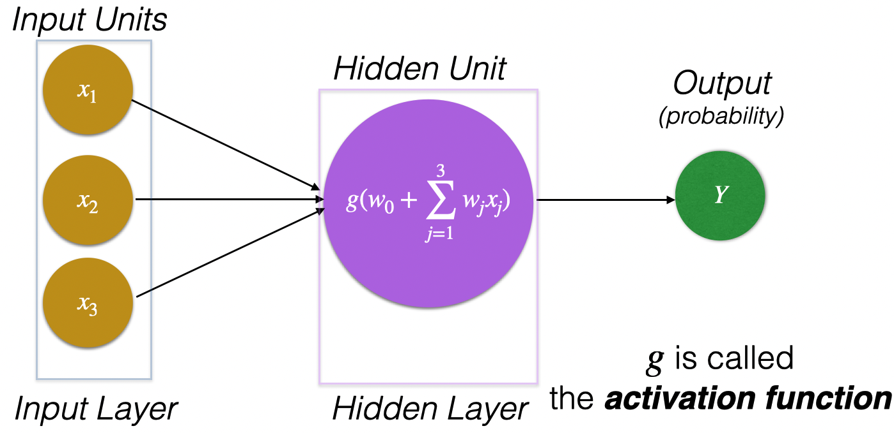
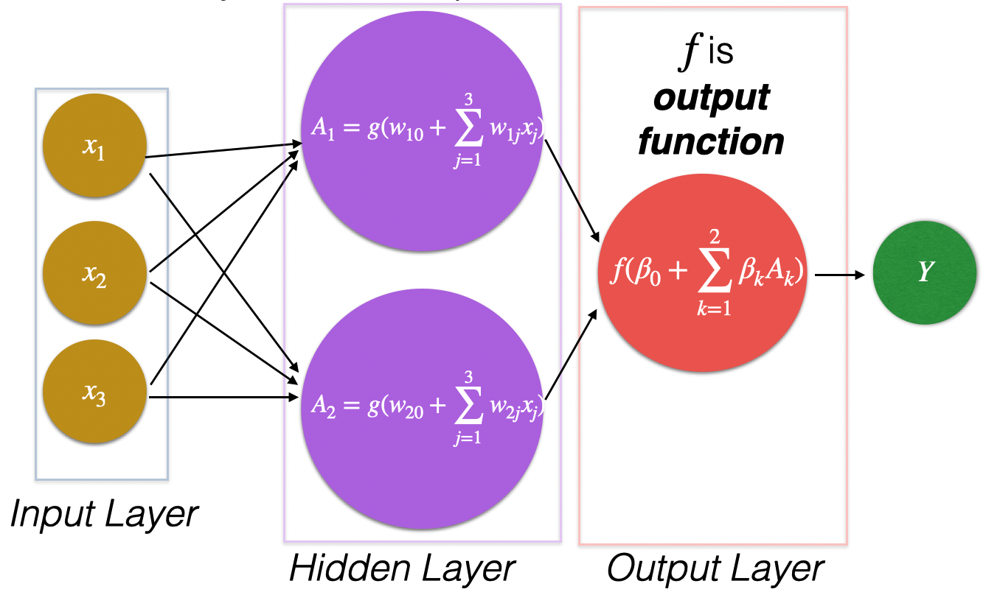
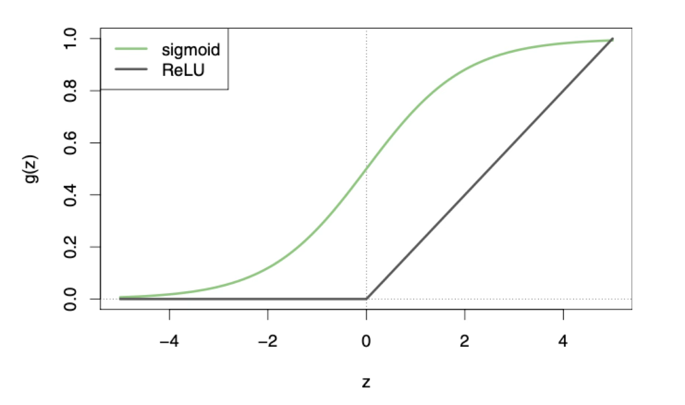
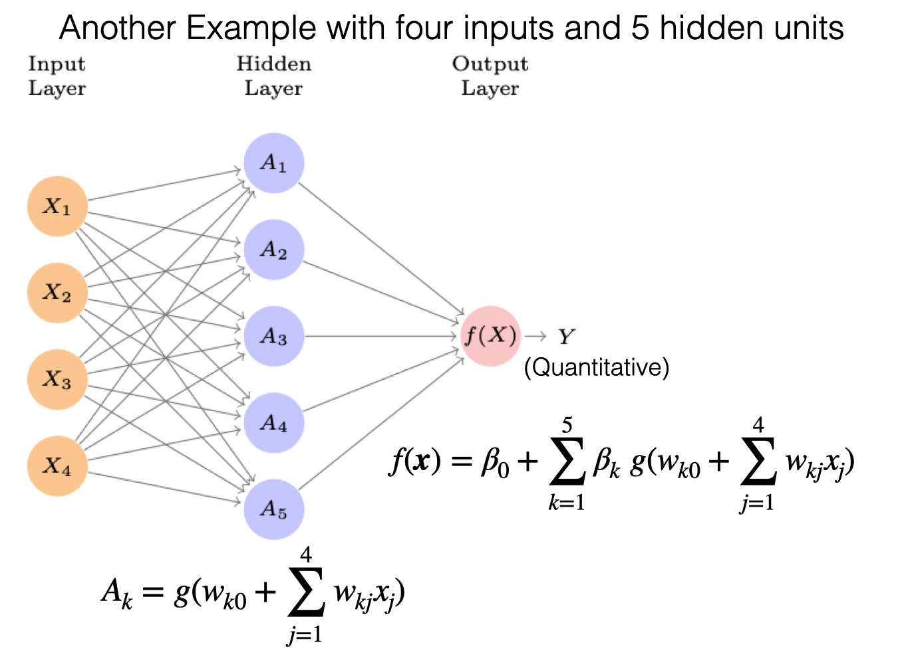
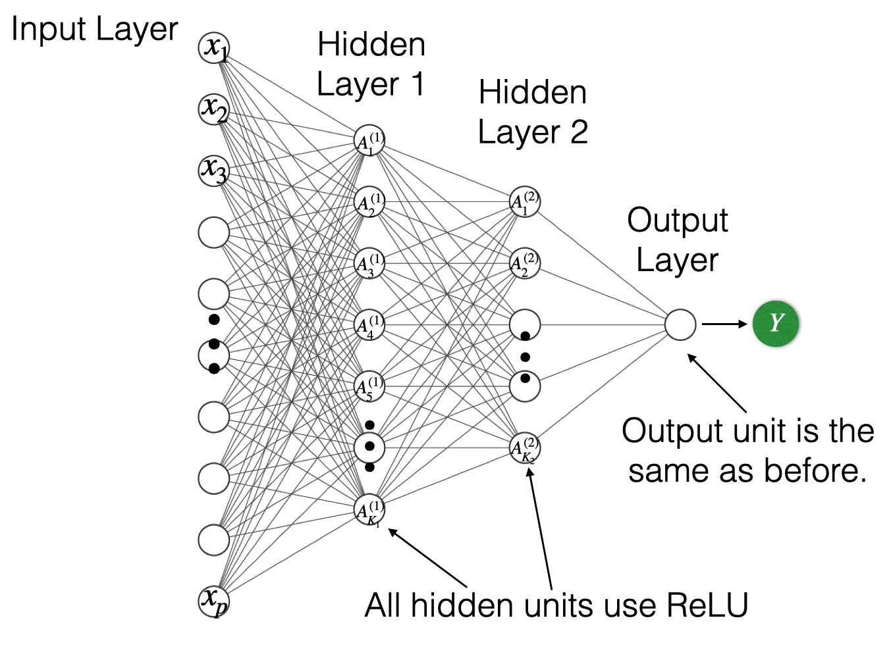
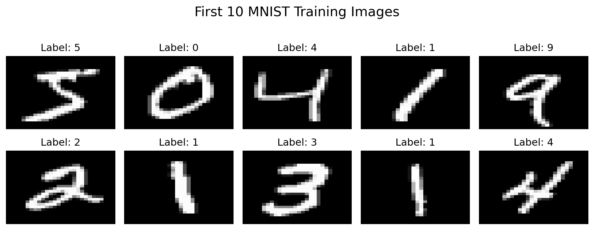
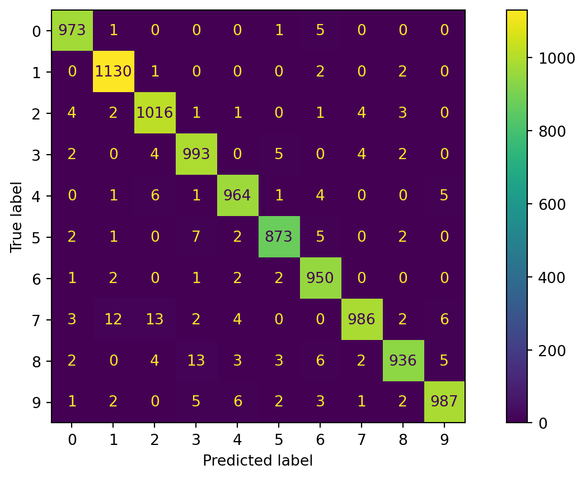
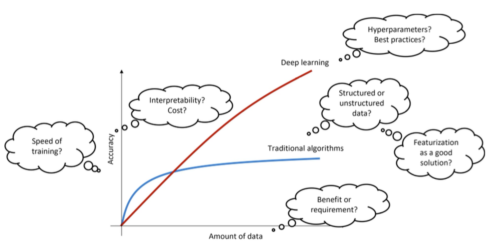
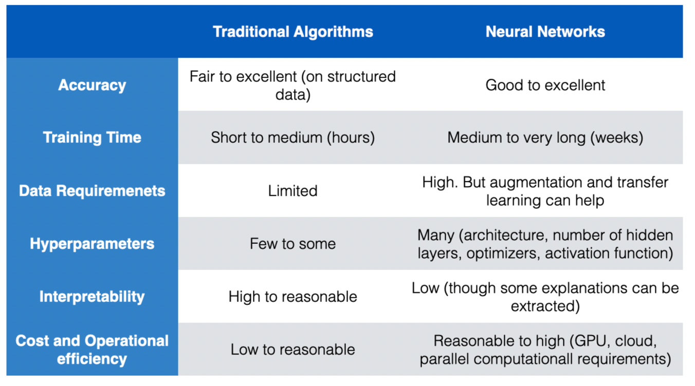

<!DOCTYPE html>
<html lang="en"><head>
<script src="https://cdn.jsdelivr.net/npm/jquery@3.5.1/dist/jquery.min.js" integrity="sha384-ZvpUoO/+PpLXR1lu4jmpXWu80pZlYUAfxl5NsBMWOEPSjUn/6Z/hRTt8+pR6L4N2" crossorigin="anonymous"></script><script src="../site_libs/clipboard/clipboard.min.js"></script>
<script src="../site_libs/quarto-html/tabby.min.js"></script>
<script src="../site_libs/quarto-html/popper.min.js"></script>
<script src="../site_libs/quarto-html/tippy.umd.min.js"></script>
<link href="../site_libs/quarto-html/tippy.css" rel="stylesheet">
<link href="../site_libs/quarto-html/light-border.css" rel="stylesheet">
<link href="../site_libs/quarto-html/quarto-syntax-highlighting-7b89279ff1a6dce999919e0e67d4d9ec.css" rel="stylesheet" id="quarto-text-highlighting-styles"><meta charset="utf-8">
  <meta name="generator" content="quarto-1.8.25">

  <meta name="author" content="Alan R. Vazquez">
  <title>IN5148 Statistics and Data Science with Applications in Engineering – Introduction to Neural Networks</title>
  <meta name="apple-mobile-web-app-capable" content="yes">
  <meta name="apple-mobile-web-app-status-bar-style" content="black-translucent">
  <meta name="viewport" content="width=device-width, initial-scale=1.0, maximum-scale=1.0, user-scalable=no, minimal-ui">
  <link rel="stylesheet" href="../site_libs/revealjs/dist/reset.css">
  <link rel="stylesheet" href="../site_libs/revealjs/dist/reveal.css">
  <style>
    code{white-space: pre-wrap;}
    span.smallcaps{font-variant: small-caps;}
    div.columns{display: flex; gap: min(4vw, 1.5em);}
    div.column{flex: auto; overflow-x: auto;}
    div.hanging-indent{margin-left: 1.5em; text-indent: -1.5em;}
    ul.task-list{list-style: none;}
    ul.task-list li input[type="checkbox"] {
      width: 0.8em;
      margin: 0 0.8em 0.2em -1em; /* quarto-specific, see https://github.com/quarto-dev/quarto-cli/issues/4556 */ 
      vertical-align: middle;
    }
    /* CSS for syntax highlighting */
    html { -webkit-text-size-adjust: 100%; }
    pre > code.sourceCode { white-space: pre; position: relative; }
    pre > code.sourceCode > span { display: inline-block; line-height: 1.25; }
    pre > code.sourceCode > span:empty { height: 1.2em; }
    .sourceCode { overflow: visible; }
    code.sourceCode > span { color: inherit; text-decoration: inherit; }
    div.sourceCode { margin: 1em 0; }
    pre.sourceCode { margin: 0; }
    @media screen {
    div.sourceCode { overflow: auto; }
    }
    @media print {
    pre > code.sourceCode { white-space: pre-wrap; }
    pre > code.sourceCode > span { text-indent: -5em; padding-left: 5em; }
    }
    pre.numberSource code
      { counter-reset: source-line 0; }
    pre.numberSource code > span
      { position: relative; left: -4em; counter-increment: source-line; }
    pre.numberSource code > span > a:first-child::before
      { content: counter(source-line);
        position: relative; left: -1em; text-align: right; vertical-align: baseline;
        border: none; display: inline-block;
        -webkit-touch-callout: none; -webkit-user-select: none;
        -khtml-user-select: none; -moz-user-select: none;
        -ms-user-select: none; user-select: none;
        padding: 0 4px; width: 4em;
        color: #aaaaaa;
      }
    pre.numberSource { margin-left: 3em; border-left: 1px solid #aaaaaa;  padding-left: 4px; }
    div.sourceCode
      { color: #003b4f; background-color: #f1f3f5; }
    @media screen {
    pre > code.sourceCode > span > a:first-child::before { text-decoration: underline; }
    }
    code span { color: #003b4f; } /* Normal */
    code span.al { color: #ad0000; } /* Alert */
    code span.an { color: #5e5e5e; } /* Annotation */
    code span.at { color: #657422; } /* Attribute */
    code span.bn { color: #ad0000; } /* BaseN */
    code span.bu { } /* BuiltIn */
    code span.cf { color: #003b4f; font-weight: bold; } /* ControlFlow */
    code span.ch { color: #20794d; } /* Char */
    code span.cn { color: #8f5902; } /* Constant */
    code span.co { color: #5e5e5e; } /* Comment */
    code span.cv { color: #5e5e5e; font-style: italic; } /* CommentVar */
    code span.do { color: #5e5e5e; font-style: italic; } /* Documentation */
    code span.dt { color: #ad0000; } /* DataType */
    code span.dv { color: #ad0000; } /* DecVal */
    code span.er { color: #ad0000; } /* Error */
    code span.ex { } /* Extension */
    code span.fl { color: #ad0000; } /* Float */
    code span.fu { color: #4758ab; } /* Function */
    code span.im { color: #00769e; } /* Import */
    code span.in { color: #5e5e5e; } /* Information */
    code span.kw { color: #003b4f; font-weight: bold; } /* Keyword */
    code span.op { color: #5e5e5e; } /* Operator */
    code span.ot { color: #003b4f; } /* Other */
    code span.pp { color: #ad0000; } /* Preprocessor */
    code span.sc { color: #5e5e5e; } /* SpecialChar */
    code span.ss { color: #20794d; } /* SpecialString */
    code span.st { color: #20794d; } /* String */
    code span.va { color: #111111; } /* Variable */
    code span.vs { color: #20794d; } /* VerbatimString */
    code span.wa { color: #5e5e5e; font-style: italic; } /* Warning */
  </style>
  <link rel="stylesheet" href="../site_libs/revealjs/dist/theme/quarto-534cd8e3a96973385dffff3f4709048d.css">
  <link rel="stylesheet" href="style.css">
  <link href="../site_libs/revealjs/plugin/quarto-line-highlight/line-highlight.css" rel="stylesheet">
  <link href="../site_libs/revealjs/plugin/reveal-menu/menu.css" rel="stylesheet">
  <link href="../site_libs/revealjs/plugin/reveal-menu/quarto-menu.css" rel="stylesheet">
  <link href="../site_libs/revealjs/plugin/quarto-support/footer.css" rel="stylesheet">
  <style type="text/css">
    .reveal div.sourceCode {
      margin: 0;
      overflow: auto;
    }
    .reveal div.hanging-indent {
      margin-left: 1em;
      text-indent: -1em;
    }
    .reveal .slide:not(.center) {
      height: 100%;
    }
    .reveal .slide.scrollable {
      overflow-y: auto;
    }
    .reveal .footnotes {
      height: 100%;
      overflow-y: auto;
    }
    .reveal .slide .absolute {
      position: absolute;
      display: block;
    }
    .reveal .footnotes ol {
      counter-reset: ol;
      list-style-type: none; 
      margin-left: 0;
    }
    .reveal .footnotes ol li:before {
      counter-increment: ol;
      content: counter(ol) ". "; 
    }
    .reveal .footnotes ol li > p:first-child {
      display: inline-block;
    }
    .reveal .slide ul,
    .reveal .slide ol {
      margin-bottom: 0.5em;
    }
    .reveal .slide ul li,
    .reveal .slide ol li {
      margin-top: 0.4em;
      margin-bottom: 0.2em;
    }
    .reveal .slide ul[role="tablist"] li {
      margin-bottom: 0;
    }
    .reveal .slide ul li > *:first-child,
    .reveal .slide ol li > *:first-child {
      margin-block-start: 0;
    }
    .reveal .slide ul li > *:last-child,
    .reveal .slide ol li > *:last-child {
      margin-block-end: 0;
    }
    .reveal .slide .columns:nth-child(3) {
      margin-block-start: 0.8em;
    }
    .reveal blockquote {
      box-shadow: none;
    }
    .reveal .tippy-content>* {
      margin-top: 0.2em;
      margin-bottom: 0.7em;
    }
    .reveal .tippy-content>*:last-child {
      margin-bottom: 0.2em;
    }
    .reveal .slide > img.stretch.quarto-figure-center,
    .reveal .slide > img.r-stretch.quarto-figure-center {
      display: block;
      margin-left: auto;
      margin-right: auto; 
    }
    .reveal .slide > img.stretch.quarto-figure-left,
    .reveal .slide > img.r-stretch.quarto-figure-left  {
      display: block;
      margin-left: 0;
      margin-right: auto; 
    }
    .reveal .slide > img.stretch.quarto-figure-right,
    .reveal .slide > img.r-stretch.quarto-figure-right  {
      display: block;
      margin-left: auto;
      margin-right: 0; 
    }
  </style>
  <script src="https://cdn.jsdelivr.net/npm/requirejs@2.3.6/require.min.js" integrity="sha384-c9c+LnTbwQ3aujuU7ULEPVvgLs+Fn6fJUvIGTsuu1ZcCf11fiEubah0ttpca4ntM sha384-6V1/AdqZRWk1KAlWbKBlGhN7VG4iE/yAZcO6NZPMF8od0vukrvr0tg4qY6NSrItx" crossorigin="anonymous"></script>
  
  <script type="application/javascript">define('jquery', [],function() {return window.jQuery;})</script>
</head>
<body class="quarto-light">
  <div class="reveal">
    <div class="slides">

<section id="title-slide" class="quarto-title-block center">
  <h1 class="title">Introduction to Neural Networks</h1>
  <p class="subtitle">IN2004B: Generation of Value with Data Analytics</p>

<div class="quarto-title-authors">
<div class="quarto-title-author">
<div class="quarto-title-author-name">
Alan R. Vazquez 
</div>
        <p class="quarto-title-affiliation">
            Department of Industrial Engineering
          </p>
    </div>
</div>

</section>
<section id="agenda" class="slide level2">
<h2>Agenda</h2>
<p><br><br></p>
<ol type="1">
<li><p>Basics and Terminology</p></li>
<li><p>Application</p></li>
<li><p>When to use a Neural Network</p></li>
</ol>
</section>
<section>
<section id="basics-and-terminology" class="title-slide slide level1 center">
<h1>Basics and Terminology</h1>

</section>
<section id="historical-background" class="slide level2">
<h2><span style="color:gold;">Historical Background</span></h2>
<div style="font-size: 90%;">
<ul>
<li><p>The idea of having “an electronic brain” dates back to the 1940s.</p></li>
<li><p>Neural networks rose to fame in the late 1980s, but they did not take off due to the lack of computing power and the discovery of mathematically tractable machine algorithms such as <em>Support Vector Machines</em>.</p></li>
<li><p>In the 2010s, NN resurged thanks to the computational speed ups given by newly developed GPUs. They also changed their names to <strong>deep learning</strong>.</p></li>
<li><p>Many innovations follow such as massively parallel computing with GPUs, modern architechtures such as CNNs and RNNS, modern optimization algorithms to train NN, and so on.</p></li>
</ul>
</div>
</section>
<section id="nowadays" class="slide level2">
<h2>Nowadays…</h2>
<p><br><br></p>
<p>NN have become prominent in many scientific fields.</p>
<p>Their most succesful applications include image classification, video classification, etc. Some of them are fun:</p>
<ul>
<li><p><a href="https://quickdraw.withgoogle.com/" class="uri">https://quickdraw.withgoogle.com/</a></p></li>
<li><p><a href="https://tenso.rs/demos/rock-paper-scissors/" class="uri">https://tenso.rs/demos/rock-paper-scissors/</a></p></li>
</ul>
</section>
<section id="neutal-network-nn" class="slide level2">
<h2>Neutal Network (NN)</h2>
<p><br></p>
<p>Essentially, a neural network is a <span style="color:#D03D56;"><strong>nonlinear function</strong></span> <span class="math inline">\(f(\boldsymbol{X})\)</span> to predict the response <span class="math inline">\(Y\)</span> using a vector of p inputs, <span class="math inline">\(\boldsymbol{X} = (X_1, X_2, ..., X_p)\)</span>.</p>
<p>The function <span class="math inline">\(f(\boldsymbol{X})\)</span> can be represented as a “network” with several interconnected nodes.</p>
<p>The nodes andnetwork structure might make us think of how the neurons in the brain are connected and communicate to each other. However, this is not true since we still do not know how the brain actualy works!</p>
</section>
<section id="terminology" class="slide level2">
<h2>Terminology</h2>
<p><br><br></p>
<p>The structure of the NN is called its architecture, which depicts all the components and steps taken to reach the prediction.</p>
<p>The nodes in the network are called <strong>units</strong>.</p>
<p>The units are divided into groups called <strong>layers</strong>.</p>
</section>
<section id="perceptron" class="slide level2">
<h2>Perceptron</h2>
<p>The simplest type of neural network is the perceptron.</p>

</section>
<section id="activation-function" class="slide level2">
<h2>Activation Function</h2>
<blockquote>
<p>An <em>activation function</em> turns several input values into a single number.</p>
</blockquote>
<p>NN were originally developed for classification tasks.</p>
<p>Therefore, they use the <span style="color:#155084;">Logistic</span> or <span style="color:#155084;">Sigmoid</span> function:</p>
<p><span class="math display">\[g(z) = \frac{1}{1 + e^{-z}}.\]</span></p>
<p>The function’s output is between 0 and 1, which can be interpreted as the probability for the target class.</p>
</section>
<section id="single-layer-nn" class="slide level2">
<h2>Single Layer NN…</h2>
<p>has two layers and multiple hidden units.</p>

</section>
<section id="section" class="slide level2">
<h2></h2>
<p><br></p>
<p>Modern NNs use the <span style="color:#A9A9A9;">Rectified Linear Unit (ReLU)</span> activation function:</p>
<p><span class="math display">\[g(z) = \begin{cases} 0 \text{  if } z &lt; 0 \\
z \text{  if } z \geq 0 \end{cases}\]</span></p>
<ul>
<li><p>The function’s output is between 0 and <span class="math inline">\(\infty\)</span>.</p></li>
<li><p>The ReLU function allows for a more computationally efficient training of a NN than the sigmoid function.</p></li>
</ul>
</section>
<section id="section-1" class="slide level2">
<h2></h2>

</section>
<section id="output-function" class="slide level2">
<h2>Output Function</h2>
<p><br><br></p>
<p>The output function takes the values of the hidden units as inputs to output the final prediction of the response</p>
<p><br></p>
<p>The function <span class="math inline">\(f\)</span> depends on the type of problem:</p>
<ul>
<li><p><span style="color:darkblue;">Regression</span>: <span class="math inline">\(f(\beta_{0} + \sum_{k=1}^{2} \beta_{k} A_k) = \beta_{0} + \sum_{k=1}^{2} \beta_{k} A_k\)</span></p></li>
<li><p><span style="color:#darkgreen;">Classification</span>: <span class="math inline">\(f(\beta_{0} + \sum_{k=1}^{2} \beta_{k} A_k) = \frac{1}{1 + e^{-(\beta_{0} + \sum_{k=1}^{2} \beta_{k} A_k)}}\)</span>.</p></li>
</ul>
</section>
<section id="section-2" class="slide level2">
<h2></h2>

</section>
<section id="discussion" class="slide level2">
<h2>Discussion</h2>
<p><br><br></p>
<ul>
<li><p>The user must specify the network architecture: the number of hidden units (<span class="math inline">\(K\)</span>) to use.</p></li>
<li><p>The more hidden units, the longer the training time and the more complex the the NN.</p></li>
<li><p>In theory, a NN with one layer and many units will work for any prediction or classification problem. In other words, a NN is a <span style="color:purple;"><strong><em>universal approximator</em></strong></span>.</p></li>
</ul>
</section>
<section id="multilayer-neural-networks" class="slide level2">
<h2>Multilayer Neural Networks</h2>
<p><br><br></p>
<p>Multilayer NN have multiple hidden layers.</p>
<p>All neurons in one layer are fully connected to those in the next layer. This is referred to as a fully <em>connected</em> multilayer NN.</p>
<p>Three layers is typical, but more are possible too (a <em>deeper</em> multilayer NN).</p>
</section>
<section id="section-3" class="slide level2">
<h2></h2>

</section>
<section id="some-comments" class="slide level2">
<h2>Some Comments</h2>
<p><br><br></p>
<ul>
<li class="fragment"><p>Multilayer NN are cheaper to train compared to a single layer NN with many hidden units.</p></li>
<li class="fragment"><p>This is because their training leverages modern in GPUs and parallel computing.</p></li>
<li class="fragment"><p>Ideally, the multilayer NN is not too wide and should not be too deep.</p></li>
</ul>
</section></section>
<section>
<section id="application" class="title-slide slide level1 center">
<h1>Application</h1>

</section>
<section id="a-new-library-tensorflow" class="slide level2">
<h2>A new library: tensorflow</h2>
<div class="columns">
<div class="column" style="width:30%;">
<div class="quarto-figure quarto-figure-left">
<figure>
<p></p>
</figure>
</div>
</div><div class="column" style="width:70%;">
<ul>
<li><strong>TensorFlow</strong> is an open-source Python library for building and training machine learning models, especially neural networks.</li>
<li>It provides high-level APIs such as <strong>Keras</strong> for fast and intuitive model development.</li>
<li>It supports efficient computation on CPUs, GPUs, and TPUs for large-scale learning tasks.</li>
<li><a href="https://www.tensorflow.org/" class="uri">https://www.tensorflow.org/</a></li>
</ul>
</div></div>
</section>
<section id="the-libraries" class="slide level2">
<h2>The libraries</h2>
<p><br><br></p>
<p>Let’s import <strong>tensorflow</strong> and our standard Python libraries.</p>
<div id="7e1cb3b7" class="cell" data-execution_count="2">
<div class="code-copy-outer-scaffold"><div class="sourceCode cell-code" id="cb1"><pre class="sourceCode numberSource python number-lines code-with-copy"><code class="sourceCode python"><span id="cb1-1"><a></a><span class="im">import</span> numpy <span class="im">as</span> np</span>
<span id="cb1-2"><a></a><span class="im">import</span> matplotlib.pyplot <span class="im">as</span> plt</span>
<span id="cb1-3"><a></a><span class="im">import</span> seaborn <span class="im">as</span> sns</span>
<span id="cb1-4"><a></a><span class="im">from</span> sklearn.metrics <span class="im">import</span> confusion_matrix, ConfusionMatrixDisplay</span>
<span id="cb1-5"><a></a><span class="im">import</span> tensorflow <span class="im">as</span> tf</span>
<span id="cb1-6"><a></a><span class="im">from</span> tensorflow.keras.models <span class="im">import</span> Sequential</span>
<span id="cb1-7"><a></a><span class="im">from</span> tensorflow.keras.layers <span class="im">import</span> Dense</span></code></pre></div><button title="Copy to Clipboard" class="code-copy-button"><i class="bi"></i></button></div>
</div>
<p>Here, we use specific functions from the <strong>pandas</strong>, <strong>matplotlib</strong>, <strong>seaborn</strong> and <strong>sklearn</strong> libraries in Python.</p>
</section>
<section id="classifying-hand-written-digits" class="slide level2">
<h2>Classifying Hand-Written Digits</h2>
<p><br></p>
<p>The MNIST dataset is one of the most widely used datasets for illustrating the performance of neural networks.</p>
<ul>
<li>Contains 70,000 grayscale images of handwritten digits (0–9)</li>
<li>Each image has a size of 28 × 28 pixels</li>
<li>Pixel values range from 0 (black) to 255 (white)</li>
<li>The response variable is the digit label (0–9)</li>
</ul>
<p><strong>Goal</strong>: Predict the correct digit based on the pixel values of the image.</p>
</section>
<section id="the-mnist-dataset" class="slide level2">
<h2>The MNIST dataset</h2>
<p>It is a datasets in <strong>tensorflow</strong>. It even has its partition into training and test dataset, and into a predictor matrix and a response vector.</p>
<div id="c6694d10" class="cell" data-execution_count="3">
<div class="code-copy-outer-scaffold"><div class="sourceCode cell-code" id="cb2"><pre class="sourceCode numberSource python number-lines code-with-copy"><code class="sourceCode python"><span id="cb2-1"><a></a>(x_train, y_train), (x_test, y_test) <span class="op">=</span> tf.keras.datasets.mnist.load_data()</span></code></pre></div><button title="Copy to Clipboard" class="code-copy-button"><i class="bi"></i></button></div>
</div>
<p>Let’s inspect the shapes of the datasets.</p>
<div id="da4bf5d4" class="cell" data-execution_count="4">
<div class="code-copy-outer-scaffold"><div class="sourceCode cell-code" id="cb3"><pre class="sourceCode numberSource python number-lines code-with-copy"><code class="sourceCode python"><span id="cb3-1"><a></a><span class="bu">print</span>(<span class="ss">f"Shape of x_train: </span><span class="sc">{</span>x_train<span class="sc">.</span>shape<span class="sc">}</span><span class="ss">"</span>)</span>
<span id="cb3-2"><a></a><span class="bu">print</span>(<span class="ss">f"Shape of y_train: </span><span class="sc">{</span>y_train<span class="sc">.</span>shape<span class="sc">}</span><span class="ss">"</span>)</span>
<span id="cb3-3"><a></a><span class="bu">print</span>(<span class="ss">f"Shape of x_test: </span><span class="sc">{</span>x_test<span class="sc">.</span>shape<span class="sc">}</span><span class="ss">"</span>)</span>
<span id="cb3-4"><a></a><span class="bu">print</span>(<span class="ss">f"Shape of y_test: </span><span class="sc">{</span>y_test<span class="sc">.</span>shape<span class="sc">}</span><span class="ss">"</span>)</span></code></pre></div><button title="Copy to Clipboard" class="code-copy-button"><i class="bi"></i></button></div>
<div class="cell-output cell-output-stdout">
<pre><code>Shape of x_train: (60000, 28, 28)
Shape of y_train: (60000,)
Shape of x_test: (10000, 28, 28)
Shape of y_test: (10000,)</code></pre>
</div>
</div>
</section>
<section id="example-images" class="slide level2">
<h2>Example images</h2>
<div id="e05cb64b" class="cell" data-execution_count="5">
<details class="code-fold">
<summary>Code</summary>
<div class="code-copy-outer-scaffold"><div class="sourceCode cell-code" id="cb5"><pre class="sourceCode numberSource python number-lines code-with-copy"><code class="sourceCode python"><span id="cb5-1"><a></a>plt.figure(figsize<span class="op">=</span>(<span class="dv">10</span>, <span class="dv">4</span>))</span>
<span id="cb5-2"><a></a><span class="cf">for</span> i <span class="kw">in</span> <span class="bu">range</span>(<span class="dv">10</span>):</span>
<span id="cb5-3"><a></a>    ax <span class="op">=</span> plt.subplot(<span class="dv">2</span>, <span class="dv">5</span>, i <span class="op">+</span> <span class="dv">1</span>)  <span class="co"># 2 rows, 5 columns    </span></span>
<span id="cb5-4"><a></a>    sns.heatmap(</span>
<span id="cb5-5"><a></a>        x_train[i],</span>
<span id="cb5-6"><a></a>        cmap<span class="op">=</span><span class="st">'gray'</span>,</span>
<span id="cb5-7"><a></a>        cbar<span class="op">=</span><span class="va">False</span>,</span>
<span id="cb5-8"><a></a>        xticklabels<span class="op">=</span><span class="va">False</span>,</span>
<span id="cb5-9"><a></a>        yticklabels<span class="op">=</span><span class="va">False</span>,</span>
<span id="cb5-10"><a></a>        ax<span class="op">=</span>ax</span>
<span id="cb5-11"><a></a>    )    </span>
<span id="cb5-12"><a></a>    ax.set_title(<span class="ss">f"Label: </span><span class="sc">{</span>y_train[i]<span class="sc">}</span><span class="ss">"</span>)</span>
<span id="cb5-13"><a></a>    ax.axis(<span class="st">'off'</span>)</span>
<span id="cb5-14"><a></a>plt.suptitle(<span class="st">'First 10 MNIST Training Images'</span>, fontsize<span class="op">=</span><span class="dv">16</span>)</span>
<span id="cb5-15"><a></a>plt.tight_layout(rect<span class="op">=</span>[<span class="dv">0</span>, <span class="fl">0.03</span>, <span class="dv">1</span>, <span class="fl">0.95</span>])</span>
<span id="cb5-16"><a></a>plt.show()</span></code></pre></div><button title="Copy to Clipboard" class="code-copy-button"><i class="bi"></i></button></div>
</details>
<div class="cell-output cell-output-display">
<div class="quarto-figure quarto-figure-center">
<figure>
<p></p>
</figure>
</div>
</div>
</div>
</section>
<section id="data-pre-processing" class="slide level2">
<h2>Data Pre-processing</h2>
<p><br></p>
<p>Neural networks work with inputs (or predictors) that take values between 0 and 1. For the images in the MNIST dataset, we can normalize the pixels of an image by dividing them by the largest pixel (255).</p>
<p><br></p>
<p>In Python, it will be something like this:</p>
<div id="a8e64ce6" class="cell" data-execution_count="6">
<div class="code-copy-outer-scaffold"><div class="sourceCode cell-code" id="cb6"><pre class="sourceCode numberSource python number-lines code-with-copy"><code class="sourceCode python"><span id="cb6-1"><a></a>x_train_normalized <span class="op">=</span> x_train.astype(<span class="st">'float32'</span>) <span class="op">/</span> <span class="fl">255.0</span></span>
<span id="cb6-2"><a></a>x_test_normalized <span class="op">=</span> x_test.astype(<span class="st">'float32'</span>) <span class="op">/</span> <span class="fl">255.0</span></span></code></pre></div><button title="Copy to Clipboard" class="code-copy-button"><i class="bi"></i></button></div>
</div>
</section>
<section id="flattening-turn-a-matrix-into-a-vector" class="slide level2">
<h2>Flattening: Turn a matrix into a vector</h2>
<p><br></p>
<p>The input images of the MNIST dataset are matrices. However, the neural networks take vectors as input, which is why we need to <em>flatten</em> each matrix of pixels into a single vector.</p>
<p><br></p>
<p>We achieve this using the code below. Note that we apply it to the predictors from both the training and test dataset.</p>
<div id="58c50cf8" class="cell" data-execution_count="7">
<div class="code-copy-outer-scaffold"><div class="sourceCode cell-code" id="cb7"><pre class="sourceCode numberSource python number-lines code-with-copy"><code class="sourceCode python"><span id="cb7-1"><a></a>image_size <span class="op">=</span> x_train.shape[<span class="dv">1</span>] <span class="op">*</span> x_train.shape[<span class="dv">2</span>] <span class="co"># 28 * 28 = 784</span></span>
<span id="cb7-2"><a></a>x_train_flattened <span class="op">=</span> x_train_normalized.reshape(<span class="op">-</span><span class="dv">1</span>, image_size)</span>
<span id="cb7-3"><a></a>x_test_flattened <span class="op">=</span> x_test_normalized.reshape(<span class="op">-</span><span class="dv">1</span>, image_size)</span></code></pre></div><button title="Copy to Clipboard" class="code-copy-button"><i class="bi"></i></button></div>
</div>
</section>
<section id="section-4" class="slide level2">
<h2></h2>
<p><br><br></p>
<p>Let’s see the new dimensions of the input.</p>
<div id="9a938fe3" class="cell" data-execution_count="8">
<div class="code-copy-outer-scaffold"><div class="sourceCode cell-code" id="cb8"><pre class="sourceCode numberSource python number-lines code-with-copy"><code class="sourceCode python"><span id="cb8-1"><a></a><span class="bu">print</span>(<span class="ss">f"Shape of x_train_flattened after flattening: </span><span class="sc">{</span>x_train_flattened<span class="sc">.</span>shape<span class="sc">}</span><span class="ss">"</span>)</span>
<span id="cb8-2"><a></a><span class="bu">print</span>(<span class="ss">f"Shape of x_test_flattened after flattening: </span><span class="sc">{</span>x_test_flattened<span class="sc">.</span>shape<span class="sc">}</span><span class="ss">"</span>)</span></code></pre></div><button title="Copy to Clipboard" class="code-copy-button"><i class="bi"></i></button></div>
<div class="cell-output cell-output-stdout">
<pre><code>Shape of x_train_flattened after flattening: (60000, 784)
Shape of x_test_flattened after flattening: (10000, 784)</code></pre>
</div>
</div>
<p><br></p>
<p>Since the images are <span class="math inline">\(28 \times 28\)</span>, the predictor input is a <span class="math inline">\(1 \times 784\)</span> vector for each image.</p>
</section>
<section id="pre-processing-the-response" class="slide level2">
<h2>Pre-processing the response</h2>
<p>We must also turn the response into a categorical response with its corresponding dummy variable encoding. First, we specify that there are 10 categories.</p>
<div id="aa4df23b" class="cell" data-execution_count="9">
<div class="code-copy-outer-scaffold"><div class="sourceCode cell-code" id="cb10"><pre class="sourceCode numberSource python number-lines code-with-copy"><code class="sourceCode python"><span id="cb10-1"><a></a>num_classes <span class="op">=</span> <span class="dv">10</span></span></code></pre></div><button title="Copy to Clipboard" class="code-copy-button"><i class="bi"></i></button></div>
</div>
<p>Next, we turn the responses into dummy variables in the training and test datasets.</p>
<div id="df7e911d" class="cell" data-execution_count="10">
<div class="code-copy-outer-scaffold"><div class="sourceCode cell-code" id="cb11"><pre class="sourceCode numberSource python number-lines code-with-copy"><code class="sourceCode python"><span id="cb11-1"><a></a>y_train_one_hot <span class="op">=</span> tf.keras.utils.to_categorical(y_train, num_classes)</span>
<span id="cb11-2"><a></a>y_test_one_hot <span class="op">=</span> tf.keras.utils.to_categorical(y_test, num_classes)</span>
<span id="cb11-3"><a></a></span>
<span id="cb11-4"><a></a><span class="bu">print</span>(<span class="ss">f"Shape of y_train_one_hot after one-hot encoding: </span><span class="sc">{</span>y_train_one_hot<span class="sc">.</span>shape<span class="sc">}</span><span class="ss">"</span>)</span>
<span id="cb11-5"><a></a><span class="bu">print</span>(<span class="ss">f"Shape of y_test_one_hot after one-hot encoding: </span><span class="sc">{</span>y_test_one_hot<span class="sc">.</span>shape<span class="sc">}</span><span class="ss">"</span>)</span></code></pre></div><button title="Copy to Clipboard" class="code-copy-button"><i class="bi"></i></button></div>
<div class="cell-output cell-output-stdout">
<pre><code>Shape of y_train_one_hot after one-hot encoding: (60000, 10)
Shape of y_test_one_hot after one-hot encoding: (10000, 10)</code></pre>
</div>
</div>
</section>
<section id="setting-the-structure-of-the-neural-network" class="slide level2">
<h2>Setting the Structure of the Neural Network</h2>
<p>The neural network we will build has the following structure:</p>
<ol type="1">
<li><strong>Input Layer / First Hidden Layer</strong>: A <code>Dense</code> layer with 256 units and a <code>ReLU</code> (Rectified Linear Unit) activation function. The <code>input_shape</code> is <code>(784,)</code>, corresponding to the flattened 28x28 MNIST images. ReLU is chosen as the activation function due to its computational efficiency and its ability to mitigate the vanishing gradient problem.</li>
</ol>
</section>
<section id="section-5" class="slide level2">
<h2></h2>
<p><br><br></p>
<ol start="2" type="1">
<li><p><strong>Second Hidden Layer</strong>: Another <code>Dense</code> layer with 128 units, also using <code>ReLU</code> activation. This layer further processes the features extracted by the previous layer.</p></li>
<li><p><strong>Output Layer</strong>: A <code>Dense</code> layer with 10 units, corresponding to the 10 possible digit classes (0-9) in the MNIST dataset. It uses a <code>Softmax</code> activation function, which outputs a probability distribution over the classes. The class with the highest probability is chosen as the model’s prediction.</p></li>
</ol>
</section>
<section id="in-tensorflow" class="slide level2">
<h2>In tensorflow</h2>
<div id="08f7bfbb" class="cell" data-execution_count="11">
<div class="code-copy-outer-scaffold"><div class="sourceCode cell-code" id="cb13"><pre class="sourceCode numberSource python number-lines code-with-copy"><code class="sourceCode python"><span id="cb13-1"><a></a>model <span class="op">=</span> Sequential()</span>
<span id="cb13-2"><a></a>model.add(Dense(<span class="dv">256</span>, activation<span class="op">=</span><span class="st">'relu'</span>, input_shape<span class="op">=</span>(image_size,)))</span>
<span id="cb13-3"><a></a>model.add(Dense(<span class="dv">128</span>, activation<span class="op">=</span><span class="st">'relu'</span>))</span>
<span id="cb13-4"><a></a>model.add(Dense(num_classes, activation<span class="op">=</span><span class="st">'softmax'</span>))</span>
<span id="cb13-5"><a></a>model.<span class="bu">compile</span>(optimizer <span class="op">=</span> <span class="st">'adam'</span>, loss <span class="op">=</span> <span class="st">'categorical_crossentropy'</span>, </span>
<span id="cb13-6"><a></a>              metrics <span class="op">=</span> [<span class="st">'accuracy'</span>])</span>
<span id="cb13-7"><a></a>model.summary()</span></code></pre></div><button title="Copy to Clipboard" class="code-copy-button"><i class="bi"></i></button></div>
<div class="cell-output cell-output-display">
<pre style="white-space:pre;overflow-x:auto;line-height:normal;font-family:Menlo,'DejaVu Sans Mono',consolas,'Courier New',monospace"><span style="font-weight: bold">Model: "sequential"</span>
</pre>
</div>
<div class="cell-output cell-output-display">
<pre style="white-space:pre;overflow-x:auto;line-height:normal;font-family:Menlo,'DejaVu Sans Mono',consolas,'Courier New',monospace">┏━━━━━━━━━━━━━━━━━━━━━━━━━━━━━━━━━┳━━━━━━━━━━━━━━━━━━━━━━━━┳━━━━━━━━━━━━━━━┓
┃<span style="font-weight: bold"> Layer (type)                    </span>┃<span style="font-weight: bold"> Output Shape           </span>┃<span style="font-weight: bold">       Param # </span>┃
┡━━━━━━━━━━━━━━━━━━━━━━━━━━━━━━━━━╇━━━━━━━━━━━━━━━━━━━━━━━━╇━━━━━━━━━━━━━━━┩
│ dense (<span style="color: #0087ff; text-decoration-color: #0087ff">Dense</span>)                   │ (<span style="color: #00d7ff; text-decoration-color: #00d7ff">None</span>, <span style="color: #00af00; text-decoration-color: #00af00">256</span>)            │       <span style="color: #00af00; text-decoration-color: #00af00">200,960</span> │
├─────────────────────────────────┼────────────────────────┼───────────────┤
│ dense_1 (<span style="color: #0087ff; text-decoration-color: #0087ff">Dense</span>)                 │ (<span style="color: #00d7ff; text-decoration-color: #00d7ff">None</span>, <span style="color: #00af00; text-decoration-color: #00af00">128</span>)            │        <span style="color: #00af00; text-decoration-color: #00af00">32,896</span> │
├─────────────────────────────────┼────────────────────────┼───────────────┤
│ dense_2 (<span style="color: #0087ff; text-decoration-color: #0087ff">Dense</span>)                 │ (<span style="color: #00d7ff; text-decoration-color: #00d7ff">None</span>, <span style="color: #00af00; text-decoration-color: #00af00">10</span>)             │         <span style="color: #00af00; text-decoration-color: #00af00">1,290</span> │
└─────────────────────────────────┴────────────────────────┴───────────────┘
</pre>
</div>
<div class="cell-output cell-output-display">
<pre style="white-space:pre;overflow-x:auto;line-height:normal;font-family:Menlo,'DejaVu Sans Mono',consolas,'Courier New',monospace"><span style="font-weight: bold"> Total params: </span><span style="color: #00af00; text-decoration-color: #00af00">235,146</span> (918.54 KB)
</pre>
</div>
<div class="cell-output cell-output-display">
<pre style="white-space:pre;overflow-x:auto;line-height:normal;font-family:Menlo,'DejaVu Sans Mono',consolas,'Courier New',monospace"><span style="font-weight: bold"> Trainable params: </span><span style="color: #00af00; text-decoration-color: #00af00">235,146</span> (918.54 KB)
</pre>
</div>
<div class="cell-output cell-output-display">
<pre style="white-space:pre;overflow-x:auto;line-height:normal;font-family:Menlo,'DejaVu Sans Mono',consolas,'Courier New',monospace"><span style="font-weight: bold"> Non-trainable params: </span><span style="color: #00af00; text-decoration-color: #00af00">0</span> (0.00 B)
</pre>
</div>
</div>
</section>
<section id="number-of-epochs" class="slide level2">
<h2>Number of epochs</h2>
<p>To train a neural network, we must set the number of <code>epochs</code>, which are the number of times the trainiing algorithm passes through the entire dataset.</p>
<p>The number of epochs can be seen as the iterations of the training algorithm. We expect that, the larger the number of epochs, the better the performance of the algorithm. However, larger numbers increases the computing time needed to train the network.</p>
<p>Let’s use 10 epochs as an example.</p>
<div id="f8e980bf" class="cell" data-execution_count="12">
<div class="code-copy-outer-scaffold"><div class="sourceCode cell-code" id="cb14"><pre class="sourceCode numberSource python number-lines code-with-copy"><code class="sourceCode python"><span id="cb14-1"><a></a>epochs <span class="op">=</span> <span class="dv">10</span></span></code></pre></div><button title="Copy to Clipboard" class="code-copy-button"><i class="bi"></i></button></div>
</div>
</section>
<section id="batch-size" class="slide level2">
<h2>Batch size</h2>
<p><br></p>
<p>Another important parameter is the <code>batch_size</code>. Essentially, this parameter controls the number of images that are processed during training. In other words, 64 samples are processed at a time in each iteration during training.</p>
<p><br></p>
<p>It is recommended that this number is a power of two, such as 8, 16, 64, and 128. Here, we fix it to 64.</p>
<div id="cee90c44" class="cell" data-execution_count="13">
<div class="code-copy-outer-scaffold"><div class="sourceCode cell-code" id="cb15"><pre class="sourceCode numberSource python number-lines code-with-copy"><code class="sourceCode python"><span id="cb15-1"><a></a>batch_size <span class="op">=</span> <span class="dv">64</span></span></code></pre></div><button title="Copy to Clipboard" class="code-copy-button"><i class="bi"></i></button></div>
</div>
</section>
<section id="training" class="slide level2">
<h2>Training</h2>
<p>Now, we are ready to train the neural network.</p>
<div id="ff92c61d" class="cell" data-execution_count="14">
<div class="code-copy-outer-scaffold"><div class="sourceCode cell-code" id="cb16"><pre class="sourceCode numberSource python number-lines code-with-copy"><code class="sourceCode python"><span id="cb16-1"><a></a>history <span class="op">=</span> model.fit(</span>
<span id="cb16-2"><a></a>    x_train_flattened, y_train_one_hot,</span>
<span id="cb16-3"><a></a>    epochs<span class="op">=</span>epochs,</span>
<span id="cb16-4"><a></a>    batch_size<span class="op">=</span>batch_size,</span>
<span id="cb16-5"><a></a>    validation_data<span class="op">=</span>(x_test_flattened, y_test_one_hot)</span>
<span id="cb16-6"><a></a>)</span></code></pre></div><button title="Copy to Clipboard" class="code-copy-button"><i class="bi"></i></button></div>
<div class="cell-output cell-output-stdout">
<div class="ansi-escaped-output">
<pre>Epoch 1/10


<span class="ansi-bold">  1/938</span> <span class="ansi-white-fg">━━━━━━━━━━━━━━━━━━━━</span> <span class="ansi-bold">6:36</span> 423ms/step - accuracy: 0.1406 - loss: 2.4178

<span class="ansi-bold"> 51/938</span> <span class="ansi-green-fg">━</span><span class="ansi-white-fg">━━━━━━━━━━━━━━━━━━━</span> <span class="ansi-bold">0s</span> 1ms/step - accuracy: 0.5835 - loss: 1.4166    

<span class="ansi-bold">103/938</span> <span class="ansi-green-fg">━━</span><span class="ansi-white-fg">━━━━━━━━━━━━━━━━━━</span> <span class="ansi-bold">0s</span> 995us/step - accuracy: 0.6877 - loss: 1.0756

<span class="ansi-bold">157/938</span> <span class="ansi-green-fg">━━━</span><span class="ansi-white-fg">━━━━━━━━━━━━━━━━━</span> <span class="ansi-bold">0s</span> 975us/step - accuracy: 0.7391 - loss: 0.9021

<span class="ansi-bold">209/938</span> <span class="ansi-green-fg">━━━━</span><span class="ansi-white-fg">━━━━━━━━━━━━━━━━</span> <span class="ansi-bold">0s</span> 972us/step - accuracy: 0.7694 - loss: 0.7983

<span class="ansi-bold">262/938</span> <span class="ansi-green-fg">━━━━━</span><span class="ansi-white-fg">━━━━━━━━━━━━━━━</span> <span class="ansi-bold">0s</span> 968us/step - accuracy: 0.7907 - loss: 0.7246

<span class="ansi-bold">315/938</span> <span class="ansi-green-fg">━━━━━━</span><span class="ansi-white-fg">━━━━━━━━━━━━━━</span> <span class="ansi-bold">0s</span> 965us/step - accuracy: 0.8066 - loss: 0.6694

<span class="ansi-bold">367/938</span> <span class="ansi-green-fg">━━━━━━━</span><span class="ansi-white-fg">━━━━━━━━━━━━━</span> <span class="ansi-bold">0s</span> 965us/step - accuracy: 0.8190 - loss: 0.6267

<span class="ansi-bold">420/938</span> <span class="ansi-green-fg">━━━━━━━━</span><span class="ansi-white-fg">━━━━━━━━━━━━</span> <span class="ansi-bold">0s</span> 963us/step - accuracy: 0.8293 - loss: 0.5911

<span class="ansi-bold">472/938</span> <span class="ansi-green-fg">━━━━━━━━━━</span><span class="ansi-white-fg">━━━━━━━━━━</span> <span class="ansi-bold">0s</span> 963us/step - accuracy: 0.8377 - loss: 0.5617

<span class="ansi-bold">523/938</span> <span class="ansi-green-fg">━━━━━━━━━━━</span><span class="ansi-white-fg">━━━━━━━━━</span> <span class="ansi-bold">0s</span> 967us/step - accuracy: 0.8448 - loss: 0.5371

<span class="ansi-bold">576/938</span> <span class="ansi-green-fg">━━━━━━━━━━━━</span><span class="ansi-white-fg">━━━━━━━━</span> <span class="ansi-bold">0s</span> 966us/step - accuracy: 0.8512 - loss: 0.5149

<span class="ansi-bold">629/938</span> <span class="ansi-green-fg">━━━━━━━━━━━━━</span><span class="ansi-white-fg">━━━━━━━</span> <span class="ansi-bold">0s</span> 964us/step - accuracy: 0.8568 - loss: 0.4953

<span class="ansi-bold">682/938</span> <span class="ansi-green-fg">━━━━━━━━━━━━━━</span><span class="ansi-white-fg">━━━━━━</span> <span class="ansi-bold">0s</span> 963us/step - accuracy: 0.8617 - loss: 0.4781

<span class="ansi-bold">736/938</span> <span class="ansi-green-fg">━━━━━━━━━━━━━━━</span><span class="ansi-white-fg">━━━━━</span> <span class="ansi-bold">0s</span> 962us/step - accuracy: 0.8663 - loss: 0.4624

<span class="ansi-bold">783/938</span> <span class="ansi-green-fg">━━━━━━━━━━━━━━━━</span><span class="ansi-white-fg">━━━━</span> <span class="ansi-bold">0s</span> 969us/step - accuracy: 0.8699 - loss: 0.4499

<span class="ansi-bold">827/938</span> <span class="ansi-green-fg">━━━━━━━━━━━━━━━━━</span><span class="ansi-white-fg">━━━</span> <span class="ansi-bold">0s</span> 979us/step - accuracy: 0.8730 - loss: 0.4391

<span class="ansi-bold">876/938</span> <span class="ansi-green-fg">━━━━━━━━━━━━━━━━━━</span><span class="ansi-white-fg">━━</span> <span class="ansi-bold">0s</span> 983us/step - accuracy: 0.8762 - loss: 0.4279

<span class="ansi-bold">924/938</span> <span class="ansi-green-fg">━━━━━━━━━━━━━━━━━━━</span><span class="ansi-white-fg">━</span> <span class="ansi-bold">0s</span> 986us/step - accuracy: 0.8791 - loss: 0.4178

<span class="ansi-bold">938/938</span> <span class="ansi-green-fg">━━━━━━━━━━━━━━━━━━━━</span> <span class="ansi-bold">2s</span> 1ms/step - accuracy: 0.8799 - loss: 0.4148 - val_accuracy: 0.9634 - val_loss: 0.1209

Epoch 2/10


<span class="ansi-bold">  1/938</span> <span class="ansi-white-fg">━━━━━━━━━━━━━━━━━━━━</span> <span class="ansi-bold">6s</span> 7ms/step - accuracy: 0.9844 - loss: 0.0579

<span class="ansi-bold"> 50/938</span> <span class="ansi-green-fg">━</span><span class="ansi-white-fg">━━━━━━━━━━━━━━━━━━━</span> <span class="ansi-bold">0s</span> 1ms/step - accuracy: 0.9717 - loss: 0.0919

<span class="ansi-bold"> 98/938</span> <span class="ansi-green-fg">━━</span><span class="ansi-white-fg">━━━━━━━━━━━━━━━━━━</span> <span class="ansi-bold">0s</span> 1ms/step - accuracy: 0.9739 - loss: 0.0895

<span class="ansi-bold">149/938</span> <span class="ansi-green-fg">━━━</span><span class="ansi-white-fg">━━━━━━━━━━━━━━━━━</span> <span class="ansi-bold">0s</span> 1ms/step - accuracy: 0.9738 - loss: 0.0901

<span class="ansi-bold">202/938</span> <span class="ansi-green-fg">━━━━</span><span class="ansi-white-fg">━━━━━━━━━━━━━━━━</span> <span class="ansi-bold">0s</span> 1ms/step - accuracy: 0.9735 - loss: 0.0910

<span class="ansi-bold">255/938</span> <span class="ansi-green-fg">━━━━━</span><span class="ansi-white-fg">━━━━━━━━━━━━━━━</span> <span class="ansi-bold">0s</span> 994us/step - accuracy: 0.9732 - loss: 0.0914

<span class="ansi-bold">305/938</span> <span class="ansi-green-fg">━━━━━━</span><span class="ansi-white-fg">━━━━━━━━━━━━━━</span> <span class="ansi-bold">0s</span> 996us/step - accuracy: 0.9730 - loss: 0.0917

<span class="ansi-bold">353/938</span> <span class="ansi-green-fg">━━━━━━━</span><span class="ansi-white-fg">━━━━━━━━━━━━━</span> <span class="ansi-bold">0s</span> 1ms/step - accuracy: 0.9729 - loss: 0.0917  

<span class="ansi-bold">399/938</span> <span class="ansi-green-fg">━━━━━━━━</span><span class="ansi-white-fg">━━━━━━━━━━━━</span> <span class="ansi-bold">0s</span> 1ms/step - accuracy: 0.9729 - loss: 0.0916

<span class="ansi-bold">446/938</span> <span class="ansi-green-fg">━━━━━━━━━</span><span class="ansi-white-fg">━━━━━━━━━━━</span> <span class="ansi-bold">0s</span> 1ms/step - accuracy: 0.9728 - loss: 0.0917

<span class="ansi-bold">492/938</span> <span class="ansi-green-fg">━━━━━━━━━━</span><span class="ansi-white-fg">━━━━━━━━━━</span> <span class="ansi-bold">0s</span> 1ms/step - accuracy: 0.9728 - loss: 0.0917

<span class="ansi-bold">540/938</span> <span class="ansi-green-fg">━━━━━━━━━━━</span><span class="ansi-white-fg">━━━━━━━━━</span> <span class="ansi-bold">0s</span> 1ms/step - accuracy: 0.9727 - loss: 0.0917

<span class="ansi-bold">588/938</span> <span class="ansi-green-fg">━━━━━━━━━━━━</span><span class="ansi-white-fg">━━━━━━━━</span> <span class="ansi-bold">0s</span> 1ms/step - accuracy: 0.9727 - loss: 0.0917

<span class="ansi-bold">638/938</span> <span class="ansi-green-fg">━━━━━━━━━━━━━</span><span class="ansi-white-fg">━━━━━━━</span> <span class="ansi-bold">0s</span> 1ms/step - accuracy: 0.9727 - loss: 0.0916

<span class="ansi-bold">689/938</span> <span class="ansi-green-fg">━━━━━━━━━━━━━━</span><span class="ansi-white-fg">━━━━━━</span> <span class="ansi-bold">0s</span> 1ms/step - accuracy: 0.9727 - loss: 0.0915

<span class="ansi-bold">740/938</span> <span class="ansi-green-fg">━━━━━━━━━━━━━━━</span><span class="ansi-white-fg">━━━━━</span> <span class="ansi-bold">0s</span> 1ms/step - accuracy: 0.9727 - loss: 0.0914

<span class="ansi-bold">792/938</span> <span class="ansi-green-fg">━━━━━━━━━━━━━━━━</span><span class="ansi-white-fg">━━━━</span> <span class="ansi-bold">0s</span> 1ms/step - accuracy: 0.9727 - loss: 0.0913

<span class="ansi-bold">843/938</span> <span class="ansi-green-fg">━━━━━━━━━━━━━━━━━</span><span class="ansi-white-fg">━━━</span> <span class="ansi-bold">0s</span> 1ms/step - accuracy: 0.9727 - loss: 0.0912

<span class="ansi-bold">892/938</span> <span class="ansi-green-fg">━━━━━━━━━━━━━━━━━━━</span><span class="ansi-white-fg">━</span> <span class="ansi-bold">0s</span> 1ms/step - accuracy: 0.9727 - loss: 0.0911

<span class="ansi-bold">938/938</span> <span class="ansi-green-fg">━━━━━━━━━━━━━━━━━━━━</span> <span class="ansi-bold">1s</span> 1ms/step - accuracy: 0.9727 - loss: 0.0910 - val_accuracy: 0.9740 - val_loss: 0.0792

Epoch 3/10


<span class="ansi-bold">  1/938</span> <span class="ansi-white-fg">━━━━━━━━━━━━━━━━━━━━</span> <span class="ansi-bold">6s</span> 7ms/step - accuracy: 1.0000 - loss: 0.0205

<span class="ansi-bold"> 51/938</span> <span class="ansi-green-fg">━</span><span class="ansi-white-fg">━━━━━━━━━━━━━━━━━━━</span> <span class="ansi-bold">0s</span> 1ms/step - accuracy: 0.9876 - loss: 0.0438

<span class="ansi-bold">102/938</span> <span class="ansi-green-fg">━━</span><span class="ansi-white-fg">━━━━━━━━━━━━━━━━━━</span> <span class="ansi-bold">0s</span> 1ms/step - accuracy: 0.9867 - loss: 0.0459

<span class="ansi-bold">152/938</span> <span class="ansi-green-fg">━━━</span><span class="ansi-white-fg">━━━━━━━━━━━━━━━━━</span> <span class="ansi-bold">0s</span> 1ms/step - accuracy: 0.9858 - loss: 0.0482

<span class="ansi-bold">203/938</span> <span class="ansi-green-fg">━━━━</span><span class="ansi-white-fg">━━━━━━━━━━━━━━━━</span> <span class="ansi-bold">0s</span> 1000us/step - accuracy: 0.9853 - loss: 0.0493

<span class="ansi-bold">255/938</span> <span class="ansi-green-fg">━━━━━</span><span class="ansi-white-fg">━━━━━━━━━━━━━━━</span> <span class="ansi-bold">0s</span> 995us/step - accuracy: 0.9849 - loss: 0.0503 

<span class="ansi-bold">306/938</span> <span class="ansi-green-fg">━━━━━━</span><span class="ansi-white-fg">━━━━━━━━━━━━━━</span> <span class="ansi-bold">0s</span> 993us/step - accuracy: 0.9845 - loss: 0.0513

<span class="ansi-bold">357/938</span> <span class="ansi-green-fg">━━━━━━━</span><span class="ansi-white-fg">━━━━━━━━━━━━━</span> <span class="ansi-bold">0s</span> 992us/step - accuracy: 0.9842 - loss: 0.0521

<span class="ansi-bold">405/938</span> <span class="ansi-green-fg">━━━━━━━━</span><span class="ansi-white-fg">━━━━━━━━━━━━</span> <span class="ansi-bold">0s</span> 999us/step - accuracy: 0.9840 - loss: 0.0527

<span class="ansi-bold">455/938</span> <span class="ansi-green-fg">━━━━━━━━━</span><span class="ansi-white-fg">━━━━━━━━━━━</span> <span class="ansi-bold">0s</span> 999us/step - accuracy: 0.9838 - loss: 0.0532

<span class="ansi-bold">504/938</span> <span class="ansi-green-fg">━━━━━━━━━━</span><span class="ansi-white-fg">━━━━━━━━━━</span> <span class="ansi-bold">0s</span> 1ms/step - accuracy: 0.9837 - loss: 0.0535  

<span class="ansi-bold">553/938</span> <span class="ansi-green-fg">━━━━━━━━━━━</span><span class="ansi-white-fg">━━━━━━━━━</span> <span class="ansi-bold">0s</span> 1ms/step - accuracy: 0.9836 - loss: 0.0539

<span class="ansi-bold">604/938</span> <span class="ansi-green-fg">━━━━━━━━━━━━</span><span class="ansi-white-fg">━━━━━━━━</span> <span class="ansi-bold">0s</span> 1ms/step - accuracy: 0.9834 - loss: 0.0542

<span class="ansi-bold">655/938</span> <span class="ansi-green-fg">━━━━━━━━━━━━━</span><span class="ansi-white-fg">━━━━━━━</span> <span class="ansi-bold">0s</span> 1ms/step - accuracy: 0.9833 - loss: 0.0545

<span class="ansi-bold">705/938</span> <span class="ansi-green-fg">━━━━━━━━━━━━━━━</span><span class="ansi-white-fg">━━━━━</span> <span class="ansi-bold">0s</span> 1ms/step - accuracy: 0.9832 - loss: 0.0547

<span class="ansi-bold">757/938</span> <span class="ansi-green-fg">━━━━━━━━━━━━━━━━</span><span class="ansi-white-fg">━━━━</span> <span class="ansi-bold">0s</span> 1ms/step - accuracy: 0.9831 - loss: 0.0550

<span class="ansi-bold">810/938</span> <span class="ansi-green-fg">━━━━━━━━━━━━━━━━━</span><span class="ansi-white-fg">━━━</span> <span class="ansi-bold">0s</span> 999us/step - accuracy: 0.9830 - loss: 0.0552

<span class="ansi-bold">860/938</span> <span class="ansi-green-fg">━━━━━━━━━━━━━━━━━━</span><span class="ansi-white-fg">━━</span> <span class="ansi-bold">0s</span> 999us/step - accuracy: 0.9829 - loss: 0.0554

<span class="ansi-bold">909/938</span> <span class="ansi-green-fg">━━━━━━━━━━━━━━━━━━━</span><span class="ansi-white-fg">━</span> <span class="ansi-bold">0s</span> 1ms/step - accuracy: 0.9829 - loss: 0.0556  

<span class="ansi-bold">938/938</span> <span class="ansi-green-fg">━━━━━━━━━━━━━━━━━━━━</span> <span class="ansi-bold">1s</span> 1ms/step - accuracy: 0.9828 - loss: 0.0557 - val_accuracy: 0.9754 - val_loss: 0.0778

Epoch 4/10


<span class="ansi-bold">  1/938</span> <span class="ansi-white-fg">━━━━━━━━━━━━━━━━━━━━</span> <span class="ansi-bold">6s</span> 7ms/step - accuracy: 0.9844 - loss: 0.0687

<span class="ansi-bold"> 49/938</span> <span class="ansi-green-fg">━</span><span class="ansi-white-fg">━━━━━━━━━━━━━━━━━━━</span> <span class="ansi-bold">0s</span> 1ms/step - accuracy: 0.9872 - loss: 0.0426

<span class="ansi-bold"> 98/938</span> <span class="ansi-green-fg">━━</span><span class="ansi-white-fg">━━━━━━━━━━━━━━━━━━</span> <span class="ansi-bold">0s</span> 1ms/step - accuracy: 0.9875 - loss: 0.0416

<span class="ansi-bold">149/938</span> <span class="ansi-green-fg">━━━</span><span class="ansi-white-fg">━━━━━━━━━━━━━━━━━</span> <span class="ansi-bold">0s</span> 1ms/step - accuracy: 0.9878 - loss: 0.0406

<span class="ansi-bold">198/938</span> <span class="ansi-green-fg">━━━━</span><span class="ansi-white-fg">━━━━━━━━━━━━━━━━</span> <span class="ansi-bold">0s</span> 1ms/step - accuracy: 0.9879 - loss: 0.0400

<span class="ansi-bold">249/938</span> <span class="ansi-green-fg">━━━━━</span><span class="ansi-white-fg">━━━━━━━━━━━━━━━</span> <span class="ansi-bold">0s</span> 1ms/step - accuracy: 0.9879 - loss: 0.0396

<span class="ansi-bold">301/938</span> <span class="ansi-green-fg">━━━━━━</span><span class="ansi-white-fg">━━━━━━━━━━━━━━</span> <span class="ansi-bold">0s</span> 1ms/step - accuracy: 0.9879 - loss: 0.0393

<span class="ansi-bold">351/938</span> <span class="ansi-green-fg">━━━━━━━</span><span class="ansi-white-fg">━━━━━━━━━━━━━</span> <span class="ansi-bold">0s</span> 1ms/step - accuracy: 0.9879 - loss: 0.0391

<span class="ansi-bold">399/938</span> <span class="ansi-green-fg">━━━━━━━━</span><span class="ansi-white-fg">━━━━━━━━━━━━</span> <span class="ansi-bold">0s</span> 1ms/step - accuracy: 0.9879 - loss: 0.0390

<span class="ansi-bold">449/938</span> <span class="ansi-green-fg">━━━━━━━━━</span><span class="ansi-white-fg">━━━━━━━━━━━</span> <span class="ansi-bold">0s</span> 1ms/step - accuracy: 0.9879 - loss: 0.0390

<span class="ansi-bold">500/938</span> <span class="ansi-green-fg">━━━━━━━━━━</span><span class="ansi-white-fg">━━━━━━━━━━</span> <span class="ansi-bold">0s</span> 1ms/step - accuracy: 0.9879 - loss: 0.0389

<span class="ansi-bold">549/938</span> <span class="ansi-green-fg">━━━━━━━━━━━</span><span class="ansi-white-fg">━━━━━━━━━</span> <span class="ansi-bold">0s</span> 1ms/step - accuracy: 0.9878 - loss: 0.0389

<span class="ansi-bold">600/938</span> <span class="ansi-green-fg">━━━━━━━━━━━━</span><span class="ansi-white-fg">━━━━━━━━</span> <span class="ansi-bold">0s</span> 1ms/step - accuracy: 0.9878 - loss: 0.0390

<span class="ansi-bold">650/938</span> <span class="ansi-green-fg">━━━━━━━━━━━━━</span><span class="ansi-white-fg">━━━━━━━</span> <span class="ansi-bold">0s</span> 1ms/step - accuracy: 0.9878 - loss: 0.0391

<span class="ansi-bold">700/938</span> <span class="ansi-green-fg">━━━━━━━━━━━━━━</span><span class="ansi-white-fg">━━━━━━</span> <span class="ansi-bold">0s</span> 1ms/step - accuracy: 0.9877 - loss: 0.0392

<span class="ansi-bold">749/938</span> <span class="ansi-green-fg">━━━━━━━━━━━━━━━</span><span class="ansi-white-fg">━━━━━</span> <span class="ansi-bold">0s</span> 1ms/step - accuracy: 0.9877 - loss: 0.0392

<span class="ansi-bold">799/938</span> <span class="ansi-green-fg">━━━━━━━━━━━━━━━━━</span><span class="ansi-white-fg">━━━</span> <span class="ansi-bold">0s</span> 1ms/step - accuracy: 0.9877 - loss: 0.0393

<span class="ansi-bold">850/938</span> <span class="ansi-green-fg">━━━━━━━━━━━━━━━━━━</span><span class="ansi-white-fg">━━</span> <span class="ansi-bold">0s</span> 1ms/step - accuracy: 0.9877 - loss: 0.0395

<span class="ansi-bold">901/938</span> <span class="ansi-green-fg">━━━━━━━━━━━━━━━━━━━</span><span class="ansi-white-fg">━</span> <span class="ansi-bold">0s</span> 1ms/step - accuracy: 0.9876 - loss: 0.0396

<span class="ansi-bold">938/938</span> <span class="ansi-green-fg">━━━━━━━━━━━━━━━━━━━━</span> <span class="ansi-bold">1s</span> 1ms/step - accuracy: 0.9876 - loss: 0.0397 - val_accuracy: 0.9763 - val_loss: 0.0726

Epoch 5/10


<span class="ansi-bold">  1/938</span> <span class="ansi-white-fg">━━━━━━━━━━━━━━━━━━━━</span> <span class="ansi-bold">5s</span> 6ms/step - accuracy: 1.0000 - loss: 0.0050

<span class="ansi-bold"> 52/938</span> <span class="ansi-green-fg">━</span><span class="ansi-white-fg">━━━━━━━━━━━━━━━━━━━</span> <span class="ansi-bold">0s</span> 986us/step - accuracy: 0.9902 - loss: 0.0308

<span class="ansi-bold">102/938</span> <span class="ansi-green-fg">━━</span><span class="ansi-white-fg">━━━━━━━━━━━━━━━━━━</span> <span class="ansi-bold">0s</span> 994us/step - accuracy: 0.9901 - loss: 0.0306

<span class="ansi-bold">151/938</span> <span class="ansi-green-fg">━━━</span><span class="ansi-white-fg">━━━━━━━━━━━━━━━━━</span> <span class="ansi-bold">0s</span> 1ms/step - accuracy: 0.9905 - loss: 0.0296  

<span class="ansi-bold">202/938</span> <span class="ansi-green-fg">━━━━</span><span class="ansi-white-fg">━━━━━━━━━━━━━━━━</span> <span class="ansi-bold">0s</span> 1ms/step - accuracy: 0.9907 - loss: 0.0289

<span class="ansi-bold">253/938</span> <span class="ansi-green-fg">━━━━━</span><span class="ansi-white-fg">━━━━━━━━━━━━━━━</span> <span class="ansi-bold">0s</span> 998us/step - accuracy: 0.9906 - loss: 0.0288

<span class="ansi-bold">302/938</span> <span class="ansi-green-fg">━━━━━━</span><span class="ansi-white-fg">━━━━━━━━━━━━━━</span> <span class="ansi-bold">0s</span> 1ms/step - accuracy: 0.9905 - loss: 0.0290  

<span class="ansi-bold">353/938</span> <span class="ansi-green-fg">━━━━━━━</span><span class="ansi-white-fg">━━━━━━━━━━━━━</span> <span class="ansi-bold">0s</span> 999us/step - accuracy: 0.9904 - loss: 0.0290

<span class="ansi-bold">403/938</span> <span class="ansi-green-fg">━━━━━━━━</span><span class="ansi-white-fg">━━━━━━━━━━━━</span> <span class="ansi-bold">0s</span> 1000us/step - accuracy: 0.9903 - loss: 0.0290

<span class="ansi-bold">454/938</span> <span class="ansi-green-fg">━━━━━━━━━</span><span class="ansi-white-fg">━━━━━━━━━━━</span> <span class="ansi-bold">0s</span> 998us/step - accuracy: 0.9903 - loss: 0.0290 

<span class="ansi-bold">506/938</span> <span class="ansi-green-fg">━━━━━━━━━━</span><span class="ansi-white-fg">━━━━━━━━━━</span> <span class="ansi-bold">0s</span> 996us/step - accuracy: 0.9902 - loss: 0.0291

<span class="ansi-bold">558/938</span> <span class="ansi-green-fg">━━━━━━━━━━━</span><span class="ansi-white-fg">━━━━━━━━━</span> <span class="ansi-bold">0s</span> 994us/step - accuracy: 0.9902 - loss: 0.0293

<span class="ansi-bold">611/938</span> <span class="ansi-green-fg">━━━━━━━━━━━━━</span><span class="ansi-white-fg">━━━━━━━</span> <span class="ansi-bold">0s</span> 990us/step - accuracy: 0.9901 - loss: 0.0295

<span class="ansi-bold">664/938</span> <span class="ansi-green-fg">━━━━━━━━━━━━━━</span><span class="ansi-white-fg">━━━━━━</span> <span class="ansi-bold">0s</span> 987us/step - accuracy: 0.9901 - loss: 0.0297

<span class="ansi-bold">718/938</span> <span class="ansi-green-fg">━━━━━━━━━━━━━━━</span><span class="ansi-white-fg">━━━━━</span> <span class="ansi-bold">0s</span> 983us/step - accuracy: 0.9900 - loss: 0.0298

<span class="ansi-bold">772/938</span> <span class="ansi-green-fg">━━━━━━━━━━━━━━━━</span><span class="ansi-white-fg">━━━━</span> <span class="ansi-bold">0s</span> 979us/step - accuracy: 0.9900 - loss: 0.0300

<span class="ansi-bold">826/938</span> <span class="ansi-green-fg">━━━━━━━━━━━━━━━━━</span><span class="ansi-white-fg">━━━</span> <span class="ansi-bold">0s</span> 977us/step - accuracy: 0.9899 - loss: 0.0302

<span class="ansi-bold">880/938</span> <span class="ansi-green-fg">━━━━━━━━━━━━━━━━━━</span><span class="ansi-white-fg">━━</span> <span class="ansi-bold">0s</span> 975us/step - accuracy: 0.9899 - loss: 0.0304

<span class="ansi-bold">934/938</span> <span class="ansi-green-fg">━━━━━━━━━━━━━━━━━━━</span><span class="ansi-white-fg">━</span> <span class="ansi-bold">0s</span> 972us/step - accuracy: 0.9899 - loss: 0.0306

<span class="ansi-bold">938/938</span> <span class="ansi-green-fg">━━━━━━━━━━━━━━━━━━━━</span> <span class="ansi-bold">1s</span> 1ms/step - accuracy: 0.9899 - loss: 0.0306 - val_accuracy: 0.9755 - val_loss: 0.0818

Epoch 6/10


<span class="ansi-bold">  1/938</span> <span class="ansi-white-fg">━━━━━━━━━━━━━━━━━━━━</span> <span class="ansi-bold">6s</span> 7ms/step - accuracy: 1.0000 - loss: 0.0058

<span class="ansi-bold"> 50/938</span> <span class="ansi-green-fg">━</span><span class="ansi-white-fg">━━━━━━━━━━━━━━━━━━━</span> <span class="ansi-bold">0s</span> 1ms/step - accuracy: 0.9918 - loss: 0.0223

<span class="ansi-bold">100/938</span> <span class="ansi-green-fg">━━</span><span class="ansi-white-fg">━━━━━━━━━━━━━━━━━━</span> <span class="ansi-bold">0s</span> 1ms/step - accuracy: 0.9909 - loss: 0.0251

<span class="ansi-bold">150/938</span> <span class="ansi-green-fg">━━━</span><span class="ansi-white-fg">━━━━━━━━━━━━━━━━━</span> <span class="ansi-bold">0s</span> 1ms/step - accuracy: 0.9909 - loss: 0.0254

<span class="ansi-bold">200/938</span> <span class="ansi-green-fg">━━━━</span><span class="ansi-white-fg">━━━━━━━━━━━━━━━━</span> <span class="ansi-bold">0s</span> 1ms/step - accuracy: 0.9911 - loss: 0.0251

<span class="ansi-bold">250/938</span> <span class="ansi-green-fg">━━━━━</span><span class="ansi-white-fg">━━━━━━━━━━━━━━━</span> <span class="ansi-bold">0s</span> 1ms/step - accuracy: 0.9913 - loss: 0.0246

<span class="ansi-bold">301/938</span> <span class="ansi-green-fg">━━━━━━</span><span class="ansi-white-fg">━━━━━━━━━━━━━━</span> <span class="ansi-bold">0s</span> 1ms/step - accuracy: 0.9915 - loss: 0.0242

<span class="ansi-bold">351/938</span> <span class="ansi-green-fg">━━━━━━━</span><span class="ansi-white-fg">━━━━━━━━━━━━━</span> <span class="ansi-bold">0s</span> 1ms/step - accuracy: 0.9916 - loss: 0.0239

<span class="ansi-bold">402/938</span> <span class="ansi-green-fg">━━━━━━━━</span><span class="ansi-white-fg">━━━━━━━━━━━━</span> <span class="ansi-bold">0s</span> 1ms/step - accuracy: 0.9918 - loss: 0.0236

<span class="ansi-bold">453/938</span> <span class="ansi-green-fg">━━━━━━━━━</span><span class="ansi-white-fg">━━━━━━━━━━━</span> <span class="ansi-bold">0s</span> 1ms/step - accuracy: 0.9919 - loss: 0.0233

<span class="ansi-bold">503/938</span> <span class="ansi-green-fg">━━━━━━━━━━</span><span class="ansi-white-fg">━━━━━━━━━━</span> <span class="ansi-bold">0s</span> 1ms/step - accuracy: 0.9920 - loss: 0.0232

<span class="ansi-bold">554/938</span> <span class="ansi-green-fg">━━━━━━━━━━━</span><span class="ansi-white-fg">━━━━━━━━━</span> <span class="ansi-bold">0s</span> 1ms/step - accuracy: 0.9920 - loss: 0.0232

<span class="ansi-bold">604/938</span> <span class="ansi-green-fg">━━━━━━━━━━━━</span><span class="ansi-white-fg">━━━━━━━━</span> <span class="ansi-bold">0s</span> 1ms/step - accuracy: 0.9920 - loss: 0.0231

<span class="ansi-bold">656/938</span> <span class="ansi-green-fg">━━━━━━━━━━━━━</span><span class="ansi-white-fg">━━━━━━━</span> <span class="ansi-bold">0s</span> 1ms/step - accuracy: 0.9920 - loss: 0.0231

<span class="ansi-bold">708/938</span> <span class="ansi-green-fg">━━━━━━━━━━━━━━━</span><span class="ansi-white-fg">━━━━━</span> <span class="ansi-bold">0s</span> 1000us/step - accuracy: 0.9920 - loss: 0.0231

<span class="ansi-bold">762/938</span> <span class="ansi-green-fg">━━━━━━━━━━━━━━━━</span><span class="ansi-white-fg">━━━━</span> <span class="ansi-bold">0s</span> 995us/step - accuracy: 0.9920 - loss: 0.0232 

<span class="ansi-bold">815/938</span> <span class="ansi-green-fg">━━━━━━━━━━━━━━━━━</span><span class="ansi-white-fg">━━━</span> <span class="ansi-bold">0s</span> 992us/step - accuracy: 0.9920 - loss: 0.0232

<span class="ansi-bold">868/938</span> <span class="ansi-green-fg">━━━━━━━━━━━━━━━━━━</span><span class="ansi-white-fg">━━</span> <span class="ansi-bold">0s</span> 990us/step - accuracy: 0.9920 - loss: 0.0233

<span class="ansi-bold">922/938</span> <span class="ansi-green-fg">━━━━━━━━━━━━━━━━━━━</span><span class="ansi-white-fg">━</span> <span class="ansi-bold">0s</span> 987us/step - accuracy: 0.9919 - loss: 0.0234

<span class="ansi-bold">938/938</span> <span class="ansi-green-fg">━━━━━━━━━━━━━━━━━━━━</span> <span class="ansi-bold">1s</span> 1ms/step - accuracy: 0.9919 - loss: 0.0234 - val_accuracy: 0.9770 - val_loss: 0.0824

Epoch 7/10


<span class="ansi-bold">  1/938</span> <span class="ansi-white-fg">━━━━━━━━━━━━━━━━━━━━</span> <span class="ansi-bold">6s</span> 6ms/step - accuracy: 1.0000 - loss: 0.0068

<span class="ansi-bold"> 54/938</span> <span class="ansi-green-fg">━</span><span class="ansi-white-fg">━━━━━━━━━━━━━━━━━━━</span> <span class="ansi-bold">0s</span> 960us/step - accuracy: 0.9939 - loss: 0.0231

<span class="ansi-bold">108/938</span> <span class="ansi-green-fg">━━</span><span class="ansi-white-fg">━━━━━━━━━━━━━━━━━━</span> <span class="ansi-bold">0s</span> 948us/step - accuracy: 0.9938 - loss: 0.0223

<span class="ansi-bold">162/938</span> <span class="ansi-green-fg">━━━</span><span class="ansi-white-fg">━━━━━━━━━━━━━━━━━</span> <span class="ansi-bold">0s</span> 944us/step - accuracy: 0.9938 - loss: 0.0213

<span class="ansi-bold">216/938</span> <span class="ansi-green-fg">━━━━</span><span class="ansi-white-fg">━━━━━━━━━━━━━━━━</span> <span class="ansi-bold">0s</span> 940us/step - accuracy: 0.9938 - loss: 0.0205

<span class="ansi-bold">262/938</span> <span class="ansi-green-fg">━━━━━</span><span class="ansi-white-fg">━━━━━━━━━━━━━━━</span> <span class="ansi-bold">0s</span> 967us/step - accuracy: 0.9939 - loss: 0.0199

<span class="ansi-bold">311/938</span> <span class="ansi-green-fg">━━━━━━</span><span class="ansi-white-fg">━━━━━━━━━━━━━━</span> <span class="ansi-bold">0s</span> 975us/step - accuracy: 0.9940 - loss: 0.0195

<span class="ansi-bold">360/938</span> <span class="ansi-green-fg">━━━━━━━</span><span class="ansi-white-fg">━━━━━━━━━━━━━</span> <span class="ansi-bold">0s</span> 982us/step - accuracy: 0.9941 - loss: 0.0191

<span class="ansi-bold">411/938</span> <span class="ansi-green-fg">━━━━━━━━</span><span class="ansi-white-fg">━━━━━━━━━━━━</span> <span class="ansi-bold">0s</span> 984us/step - accuracy: 0.9941 - loss: 0.0188

<span class="ansi-bold">463/938</span> <span class="ansi-green-fg">━━━━━━━━━</span><span class="ansi-white-fg">━━━━━━━━━━━</span> <span class="ansi-bold">0s</span> 983us/step - accuracy: 0.9941 - loss: 0.0187

<span class="ansi-bold">515/938</span> <span class="ansi-green-fg">━━━━━━━━━━</span><span class="ansi-white-fg">━━━━━━━━━━</span> <span class="ansi-bold">0s</span> 981us/step - accuracy: 0.9940 - loss: 0.0188

<span class="ansi-bold">567/938</span> <span class="ansi-green-fg">━━━━━━━━━━━━</span><span class="ansi-white-fg">━━━━━━━━</span> <span class="ansi-bold">0s</span> 979us/step - accuracy: 0.9940 - loss: 0.0189

<span class="ansi-bold">620/938</span> <span class="ansi-green-fg">━━━━━━━━━━━━━</span><span class="ansi-white-fg">━━━━━━━</span> <span class="ansi-bold">0s</span> 977us/step - accuracy: 0.9939 - loss: 0.0189

<span class="ansi-bold">673/938</span> <span class="ansi-green-fg">━━━━━━━━━━━━━━</span><span class="ansi-white-fg">━━━━━━</span> <span class="ansi-bold">0s</span> 975us/step - accuracy: 0.9939 - loss: 0.0190

<span class="ansi-bold">725/938</span> <span class="ansi-green-fg">━━━━━━━━━━━━━━━</span><span class="ansi-white-fg">━━━━━</span> <span class="ansi-bold">0s</span> 975us/step - accuracy: 0.9938 - loss: 0.0191

<span class="ansi-bold">777/938</span> <span class="ansi-green-fg">━━━━━━━━━━━━━━━━</span><span class="ansi-white-fg">━━━━</span> <span class="ansi-bold">0s</span> 975us/step - accuracy: 0.9938 - loss: 0.0193

<span class="ansi-bold">829/938</span> <span class="ansi-green-fg">━━━━━━━━━━━━━━━━━</span><span class="ansi-white-fg">━━━</span> <span class="ansi-bold">0s</span> 975us/step - accuracy: 0.9937 - loss: 0.0194

<span class="ansi-bold">876/938</span> <span class="ansi-green-fg">━━━━━━━━━━━━━━━━━━</span><span class="ansi-white-fg">━━</span> <span class="ansi-bold">0s</span> 981us/step - accuracy: 0.9937 - loss: 0.0195

<span class="ansi-bold">927/938</span> <span class="ansi-green-fg">━━━━━━━━━━━━━━━━━━━</span><span class="ansi-white-fg">━</span> <span class="ansi-bold">0s</span> 981us/step - accuracy: 0.9936 - loss: 0.0196

<span class="ansi-bold">938/938</span> <span class="ansi-green-fg">━━━━━━━━━━━━━━━━━━━━</span> <span class="ansi-bold">1s</span> 1ms/step - accuracy: 0.9936 - loss: 0.0196 - val_accuracy: 0.9781 - val_loss: 0.0798

Epoch 8/10


<span class="ansi-bold">  1/938</span> <span class="ansi-white-fg">━━━━━━━━━━━━━━━━━━━━</span> <span class="ansi-bold">6s</span> 7ms/step - accuracy: 1.0000 - loss: 0.0051

<span class="ansi-bold"> 52/938</span> <span class="ansi-green-fg">━</span><span class="ansi-white-fg">━━━━━━━━━━━━━━━━━━━</span> <span class="ansi-bold">0s</span> 981us/step - accuracy: 0.9949 - loss: 0.0148

<span class="ansi-bold">104/938</span> <span class="ansi-green-fg">━━</span><span class="ansi-white-fg">━━━━━━━━━━━━━━━━━━</span> <span class="ansi-bold">0s</span> 972us/step - accuracy: 0.9951 - loss: 0.0146

<span class="ansi-bold">154/938</span> <span class="ansi-green-fg">━━━</span><span class="ansi-white-fg">━━━━━━━━━━━━━━━━━</span> <span class="ansi-bold">0s</span> 983us/step - accuracy: 0.9949 - loss: 0.0155

<span class="ansi-bold">206/938</span> <span class="ansi-green-fg">━━━━</span><span class="ansi-white-fg">━━━━━━━━━━━━━━━━</span> <span class="ansi-bold">0s</span> 978us/step - accuracy: 0.9948 - loss: 0.0157

<span class="ansi-bold">259/938</span> <span class="ansi-green-fg">━━━━━</span><span class="ansi-white-fg">━━━━━━━━━━━━━━━</span> <span class="ansi-bold">0s</span> 972us/step - accuracy: 0.9947 - loss: 0.0160

<span class="ansi-bold">312/938</span> <span class="ansi-green-fg">━━━━━━</span><span class="ansi-white-fg">━━━━━━━━━━━━━━</span> <span class="ansi-bold">0s</span> 967us/step - accuracy: 0.9946 - loss: 0.0163

<span class="ansi-bold">365/938</span> <span class="ansi-green-fg">━━━━━━━</span><span class="ansi-white-fg">━━━━━━━━━━━━━</span> <span class="ansi-bold">0s</span> 965us/step - accuracy: 0.9946 - loss: 0.0165

<span class="ansi-bold">418/938</span> <span class="ansi-green-fg">━━━━━━━━</span><span class="ansi-white-fg">━━━━━━━━━━━━</span> <span class="ansi-bold">0s</span> 963us/step - accuracy: 0.9946 - loss: 0.0165

<span class="ansi-bold">471/938</span> <span class="ansi-green-fg">━━━━━━━━━━</span><span class="ansi-white-fg">━━━━━━━━━━</span> <span class="ansi-bold">0s</span> 962us/step - accuracy: 0.9946 - loss: 0.0165

<span class="ansi-bold">522/938</span> <span class="ansi-green-fg">━━━━━━━━━━━</span><span class="ansi-white-fg">━━━━━━━━━</span> <span class="ansi-bold">0s</span> 966us/step - accuracy: 0.9946 - loss: 0.0164

<span class="ansi-bold">572/938</span> <span class="ansi-green-fg">━━━━━━━━━━━━</span><span class="ansi-white-fg">━━━━━━━━</span> <span class="ansi-bold">0s</span> 969us/step - accuracy: 0.9947 - loss: 0.0164

<span class="ansi-bold">622/938</span> <span class="ansi-green-fg">━━━━━━━━━━━━━</span><span class="ansi-white-fg">━━━━━━━</span> <span class="ansi-bold">0s</span> 973us/step - accuracy: 0.9947 - loss: 0.0164

<span class="ansi-bold">673/938</span> <span class="ansi-green-fg">━━━━━━━━━━━━━━</span><span class="ansi-white-fg">━━━━━━</span> <span class="ansi-bold">0s</span> 974us/step - accuracy: 0.9947 - loss: 0.0164

<span class="ansi-bold">725/938</span> <span class="ansi-green-fg">━━━━━━━━━━━━━━━</span><span class="ansi-white-fg">━━━━━</span> <span class="ansi-bold">0s</span> 974us/step - accuracy: 0.9946 - loss: 0.0164

<span class="ansi-bold">778/938</span> <span class="ansi-green-fg">━━━━━━━━━━━━━━━━</span><span class="ansi-white-fg">━━━━</span> <span class="ansi-bold">0s</span> 973us/step - accuracy: 0.9946 - loss: 0.0165

<span class="ansi-bold">831/938</span> <span class="ansi-green-fg">━━━━━━━━━━━━━━━━━</span><span class="ansi-white-fg">━━━</span> <span class="ansi-bold">0s</span> 971us/step - accuracy: 0.9946 - loss: 0.0166

<span class="ansi-bold">885/938</span> <span class="ansi-green-fg">━━━━━━━━━━━━━━━━━━</span><span class="ansi-white-fg">━━</span> <span class="ansi-bold">0s</span> 970us/step - accuracy: 0.9946 - loss: 0.0167

<span class="ansi-bold">938/938</span> <span class="ansi-green-fg">━━━━━━━━━━━━━━━━━━━━</span> <span class="ansi-bold">1s</span> 1ms/step - accuracy: 0.9945 - loss: 0.0168 - val_accuracy: 0.9805 - val_loss: 0.0710

Epoch 9/10


<span class="ansi-bold">  1/938</span> <span class="ansi-white-fg">━━━━━━━━━━━━━━━━━━━━</span> <span class="ansi-bold">6s</span> 7ms/step - accuracy: 0.9844 - loss: 0.0301

<span class="ansi-bold"> 50/938</span> <span class="ansi-green-fg">━</span><span class="ansi-white-fg">━━━━━━━━━━━━━━━━━━━</span> <span class="ansi-bold">0s</span> 1ms/step - accuracy: 0.9950 - loss: 0.0138

<span class="ansi-bold"> 99/938</span> <span class="ansi-green-fg">━━</span><span class="ansi-white-fg">━━━━━━━━━━━━━━━━━━</span> <span class="ansi-bold">0s</span> 1ms/step - accuracy: 0.9952 - loss: 0.0128

<span class="ansi-bold">150/938</span> <span class="ansi-green-fg">━━━</span><span class="ansi-white-fg">━━━━━━━━━━━━━━━━━</span> <span class="ansi-bold">0s</span> 1ms/step - accuracy: 0.9957 - loss: 0.0119

<span class="ansi-bold">202/938</span> <span class="ansi-green-fg">━━━━</span><span class="ansi-white-fg">━━━━━━━━━━━━━━━━</span> <span class="ansi-bold">0s</span> 1ms/step - accuracy: 0.9959 - loss: 0.0115

<span class="ansi-bold">254/938</span> <span class="ansi-green-fg">━━━━━</span><span class="ansi-white-fg">━━━━━━━━━━━━━━━</span> <span class="ansi-bold">0s</span> 996us/step - accuracy: 0.9958 - loss: 0.0117

<span class="ansi-bold">308/938</span> <span class="ansi-green-fg">━━━━━━</span><span class="ansi-white-fg">━━━━━━━━━━━━━━</span> <span class="ansi-bold">0s</span> 986us/step - accuracy: 0.9957 - loss: 0.0120

<span class="ansi-bold">362/938</span> <span class="ansi-green-fg">━━━━━━━</span><span class="ansi-white-fg">━━━━━━━━━━━━━</span> <span class="ansi-bold">0s</span> 979us/step - accuracy: 0.9956 - loss: 0.0121

<span class="ansi-bold">416/938</span> <span class="ansi-green-fg">━━━━━━━━</span><span class="ansi-white-fg">━━━━━━━━━━━━</span> <span class="ansi-bold">0s</span> 973us/step - accuracy: 0.9956 - loss: 0.0121

<span class="ansi-bold">470/938</span> <span class="ansi-green-fg">━━━━━━━━━━</span><span class="ansi-white-fg">━━━━━━━━━━</span> <span class="ansi-bold">0s</span> 969us/step - accuracy: 0.9956 - loss: 0.0122

<span class="ansi-bold">523/938</span> <span class="ansi-green-fg">━━━━━━━━━━━</span><span class="ansi-white-fg">━━━━━━━━━</span> <span class="ansi-bold">0s</span> 967us/step - accuracy: 0.9956 - loss: 0.0123

<span class="ansi-bold">574/938</span> <span class="ansi-green-fg">━━━━━━━━━━━━</span><span class="ansi-white-fg">━━━━━━━━</span> <span class="ansi-bold">0s</span> 970us/step - accuracy: 0.9956 - loss: 0.0124

<span class="ansi-bold">625/938</span> <span class="ansi-green-fg">━━━━━━━━━━━━━</span><span class="ansi-white-fg">━━━━━━━</span> <span class="ansi-bold">0s</span> 972us/step - accuracy: 0.9955 - loss: 0.0124

<span class="ansi-bold">676/938</span> <span class="ansi-green-fg">━━━━━━━━━━━━━━</span><span class="ansi-white-fg">━━━━━━</span> <span class="ansi-bold">0s</span> 973us/step - accuracy: 0.9955 - loss: 0.0126

<span class="ansi-bold">729/938</span> <span class="ansi-green-fg">━━━━━━━━━━━━━━━</span><span class="ansi-white-fg">━━━━━</span> <span class="ansi-bold">0s</span> 971us/step - accuracy: 0.9954 - loss: 0.0128

<span class="ansi-bold">783/938</span> <span class="ansi-green-fg">━━━━━━━━━━━━━━━━</span><span class="ansi-white-fg">━━━━</span> <span class="ansi-bold">0s</span> 969us/step - accuracy: 0.9954 - loss: 0.0130

<span class="ansi-bold">837/938</span> <span class="ansi-green-fg">━━━━━━━━━━━━━━━━━</span><span class="ansi-white-fg">━━━</span> <span class="ansi-bold">0s</span> 967us/step - accuracy: 0.9953 - loss: 0.0132

<span class="ansi-bold">890/938</span> <span class="ansi-green-fg">━━━━━━━━━━━━━━━━━━</span><span class="ansi-white-fg">━━</span> <span class="ansi-bold">0s</span> 966us/step - accuracy: 0.9952 - loss: 0.0134

<span class="ansi-bold">938/938</span> <span class="ansi-green-fg">━━━━━━━━━━━━━━━━━━━━</span> <span class="ansi-bold">1s</span> 1ms/step - accuracy: 0.9952 - loss: 0.0136 - val_accuracy: 0.9803 - val_loss: 0.0765

Epoch 10/10


<span class="ansi-bold">  1/938</span> <span class="ansi-white-fg">━━━━━━━━━━━━━━━━━━━━</span> <span class="ansi-bold">5s</span> 6ms/step - accuracy: 1.0000 - loss: 9.5125e-04

<span class="ansi-bold"> 53/938</span> <span class="ansi-green-fg">━</span><span class="ansi-white-fg">━━━━━━━━━━━━━━━━━━━</span> <span class="ansi-bold">0s</span> 974us/step - accuracy: 0.9968 - loss: 0.0097  

<span class="ansi-bold">106/938</span> <span class="ansi-green-fg">━━</span><span class="ansi-white-fg">━━━━━━━━━━━━━━━━━━</span> <span class="ansi-bold">0s</span> 959us/step - accuracy: 0.9967 - loss: 0.0100

<span class="ansi-bold">159/938</span> <span class="ansi-green-fg">━━━</span><span class="ansi-white-fg">━━━━━━━━━━━━━━━━━</span> <span class="ansi-bold">0s</span> 954us/step - accuracy: 0.9967 - loss: 0.0103

<span class="ansi-bold">213/938</span> <span class="ansi-green-fg">━━━━</span><span class="ansi-white-fg">━━━━━━━━━━━━━━━━</span> <span class="ansi-bold">0s</span> 950us/step - accuracy: 0.9963 - loss: 0.0109

<span class="ansi-bold">267/938</span> <span class="ansi-green-fg">━━━━━</span><span class="ansi-white-fg">━━━━━━━━━━━━━━━</span> <span class="ansi-bold">0s</span> 947us/step - accuracy: 0.9961 - loss: 0.0114

<span class="ansi-bold">321/938</span> <span class="ansi-green-fg">━━━━━━</span><span class="ansi-white-fg">━━━━━━━━━━━━━━</span> <span class="ansi-bold">0s</span> 945us/step - accuracy: 0.9959 - loss: 0.0118

<span class="ansi-bold">375/938</span> <span class="ansi-green-fg">━━━━━━━</span><span class="ansi-white-fg">━━━━━━━━━━━━━</span> <span class="ansi-bold">0s</span> 944us/step - accuracy: 0.9958 - loss: 0.0120

<span class="ansi-bold">429/938</span> <span class="ansi-green-fg">━━━━━━━━━</span><span class="ansi-white-fg">━━━━━━━━━━━</span> <span class="ansi-bold">0s</span> 942us/step - accuracy: 0.9958 - loss: 0.0122

<span class="ansi-bold">482/938</span> <span class="ansi-green-fg">━━━━━━━━━━</span><span class="ansi-white-fg">━━━━━━━━━━</span> <span class="ansi-bold">0s</span> 943us/step - accuracy: 0.9957 - loss: 0.0124

<span class="ansi-bold">536/938</span> <span class="ansi-green-fg">━━━━━━━━━━━</span><span class="ansi-white-fg">━━━━━━━━━</span> <span class="ansi-bold">0s</span> 942us/step - accuracy: 0.9956 - loss: 0.0126

<span class="ansi-bold">590/938</span> <span class="ansi-green-fg">━━━━━━━━━━━━</span><span class="ansi-white-fg">━━━━━━━━</span> <span class="ansi-bold">0s</span> 941us/step - accuracy: 0.9956 - loss: 0.0127

<span class="ansi-bold">644/938</span> <span class="ansi-green-fg">━━━━━━━━━━━━━</span><span class="ansi-white-fg">━━━━━━━</span> <span class="ansi-bold">0s</span> 941us/step - accuracy: 0.9956 - loss: 0.0128

<span class="ansi-bold">699/938</span> <span class="ansi-green-fg">━━━━━━━━━━━━━━</span><span class="ansi-white-fg">━━━━━━</span> <span class="ansi-bold">0s</span> 939us/step - accuracy: 0.9955 - loss: 0.0129

<span class="ansi-bold">753/938</span> <span class="ansi-green-fg">━━━━━━━━━━━━━━━━</span><span class="ansi-white-fg">━━━━</span> <span class="ansi-bold">0s</span> 939us/step - accuracy: 0.9955 - loss: 0.0130

<span class="ansi-bold">807/938</span> <span class="ansi-green-fg">━━━━━━━━━━━━━━━━━</span><span class="ansi-white-fg">━━━</span> <span class="ansi-bold">0s</span> 940us/step - accuracy: 0.9955 - loss: 0.0131

<span class="ansi-bold">861/938</span> <span class="ansi-green-fg">━━━━━━━━━━━━━━━━━━</span><span class="ansi-white-fg">━━</span> <span class="ansi-bold">0s</span> 939us/step - accuracy: 0.9955 - loss: 0.0132

<span class="ansi-bold">915/938</span> <span class="ansi-green-fg">━━━━━━━━━━━━━━━━━━━</span><span class="ansi-white-fg">━</span> <span class="ansi-bold">0s</span> 939us/step - accuracy: 0.9954 - loss: 0.0133

<span class="ansi-bold">938/938</span> <span class="ansi-green-fg">━━━━━━━━━━━━━━━━━━━━</span> <span class="ansi-bold">1s</span> 1ms/step - accuracy: 0.9954 - loss: 0.0133 - val_accuracy: 0.9808 - val_loss: 0.0732
</pre>
</div>
</div>
</div>
</section>
<section id="evaluate-algorithm-performance" class="slide level2">
<h2>Evaluate Algorithm Performance</h2>
<p>We evaluate the classification performance of the neural network using test data. To this end, we apply the neural network classifier using the function <code>.evaluate</code>.</p>
<p>Remember, the input must be the flattened or vectorized images in <code>x_test_flattened</code> and the dummy coded responses in <code>y_test_one_hot</code></p>
<div id="e343a38c" class="cell" data-execution_count="15">
<div class="code-copy-outer-scaffold"><div class="sourceCode cell-code" id="cb17"><pre class="sourceCode numberSource python number-lines code-with-copy"><code class="sourceCode python"><span id="cb17-1"><a></a>test_loss, test_accuracy <span class="op">=</span> model.evaluate(x_test_flattened, y_test_one_hot)</span>
<span id="cb17-2"><a></a></span>
<span id="cb17-3"><a></a><span class="co"># Show the accuracy on the training dataset.</span></span>
<span id="cb17-4"><a></a><span class="bu">print</span>(<span class="ss">f"Test Accuracy: </span><span class="sc">{</span>test_accuracy<span class="sc">:.4f}</span><span class="ss">"</span>)</span></code></pre></div><button title="Copy to Clipboard" class="code-copy-button"><i class="bi"></i></button></div>
</div>
</section>
<section id="accuracy" class="slide level2">
<h2>Accuracy</h2>
<p><br><br><br></p>
<p>In the multi-class problem, accuracy is still the proportion of correct decisions made.</p>
<div id="025a4abf" class="cell" data-execution_count="16">
<div class="code-copy-outer-scaffold"><div class="sourceCode cell-code" id="cb18"><pre class="sourceCode numberSource python number-lines code-with-copy"><code class="sourceCode python"><span id="cb18-1"><a></a><span class="bu">print</span>(<span class="ss">f"Test Accuracy: </span><span class="sc">{</span>test_accuracy<span class="sc">:.4f}</span><span class="ss">"</span>)</span></code></pre></div><button title="Copy to Clipboard" class="code-copy-button"><i class="bi"></i></button></div>
<div class="cell-output cell-output-stdout">
<pre><code>Test Accuracy: 0.9808</code></pre>
</div>
</div>
</section>
<section id="individual-classifications" class="slide level2">
<h2>Individual Classifications</h2>
<p><br><br></p>
<p>As with any classifier seen before, the neural network calculates the probability that an image belongs to each class (0-9). We can have a look at the proabilities using the function <code>.predict()</code>.</p>
<div id="c565c7da" class="cell" data-execution_count="17">
<div class="code-copy-outer-scaffold"><div class="sourceCode cell-code" id="cb20"><pre class="sourceCode numberSource python number-lines code-with-copy"><code class="sourceCode python"><span id="cb20-1"><a></a>y_pred_probabilities <span class="op">=</span> model.predict(x_test_flattened)</span></code></pre></div><button title="Copy to Clipboard" class="code-copy-button"><i class="bi"></i></button></div>
</div>
</section>
<section id="section-6" class="slide level2">
<h2></h2>
<p><br><br><br></p>
<p>Following the <strong>Bayes classifier</strong>, we classify each observation in the test dataset to the most probable class. This can be done using the command below, where <code>np.argmax()</code> is a function from <strong>numpy</strong> that takes the argument with the maximum value.</p>
<div id="5d5ba6cd" class="cell" data-execution_count="18">
<div class="code-copy-outer-scaffold"><div class="sourceCode cell-code" id="cb21"><pre class="sourceCode numberSource python number-lines code-with-copy"><code class="sourceCode python"><span id="cb21-1"><a></a>y_pred_labels <span class="op">=</span> np.argmax(y_pred_probabilities, axis<span class="op">=</span><span class="dv">1</span>)</span>
<span id="cb21-2"><a></a>y_pred_labels</span></code></pre></div><button title="Copy to Clipboard" class="code-copy-button"><i class="bi"></i></button></div>
<div class="cell-output cell-output-display" data-execution_count="17">
<pre><code>array([7, 2, 1, ..., 4, 5, 6])</code></pre>
</div>
</div>
</section>
<section id="confusion-matrix" class="slide level2">
<h2>Confusion Matrix</h2>
<div id="2af83488" class="cell" data-execution_count="19">
<details class="code-fold">
<summary>Code</summary>
<div class="code-copy-outer-scaffold"><div class="sourceCode cell-code" id="cb23"><pre class="sourceCode numberSource python number-lines code-with-copy"><code class="sourceCode python"><span id="cb23-1"><a></a>y_true_labels <span class="op">=</span> np.argmax(y_test_one_hot, axis<span class="op">=</span><span class="dv">1</span>)</span>
<span id="cb23-2"><a></a>cm <span class="op">=</span> confusion_matrix(y_true_labels, y_pred_labels)</span>
<span id="cb23-3"><a></a>ConfusionMatrixDisplay(cm).plot()</span></code></pre></div><button title="Copy to Clipboard" class="code-copy-button"><i class="bi"></i></button></div>
</details>
<div class="cell-output cell-output-display">
<div class="quarto-figure quarto-figure-center">
<figure>
<p></p>
</figure>
</div>
</div>
</div>
</section></section>
<section>
<section id="when-to-use-a-neural-network" class="title-slide slide level1 center">
<h1>When to use a Neural Network</h1>

</section>
<section id="general-remarks" class="slide level2">
<h2>General Remarks</h2>
<p><br><br></p>
<ul>
<li><p>The “deep” in deep learning is not a reference to any kind of deeper understanding achieved by the approach.</p></li>
<li><p>Instead, it stands for the idea of successive layers of representations.</p></li>
<li><p>Modern deep learning often involves tens or even hundres of sucessive layers.</p></li>
</ul>
</section>
<section id="when-should-i-use-a-nn" class="slide level2">
<h2>When should I use a NN?</h2>

</section>
<section id="nn-vs-other-algorithms" class="slide level2">
<h2>NN VS Other Algorithms</h2>

</section></section>
<section id="return-to-main-page" class="title-slide slide level1 center">
<h1><a href="https://alanrvazquez.github.io/TEC-IN5148/">Return to main page</a></h1>


</section>
    </div>
  <div class="quarto-auto-generated-content" style="display: none;">
<p></p>
<div class="footer footer-default">
<p>Tecnologico de Monterrey</p>
</div>
</div></div>

  <script>window.backupDefine = window.define; window.define = undefined;</script>
  <script src="../site_libs/revealjs/dist/reveal.js"></script>
  <!-- reveal.js plugins -->
  <script src="../site_libs/revealjs/plugin/quarto-line-highlight/line-highlight.js"></script>
  <script src="../site_libs/revealjs/plugin/pdf-export/pdfexport.js"></script>
  <script src="../site_libs/revealjs/plugin/reveal-menu/menu.js"></script>
  <script src="../site_libs/revealjs/plugin/reveal-menu/quarto-menu.js"></script>
  <script src="../site_libs/revealjs/plugin/quarto-support/support.js"></script>
  

  <script src="../site_libs/revealjs/plugin/notes/notes.js"></script>
  <script src="../site_libs/revealjs/plugin/search/search.js"></script>
  <script src="../site_libs/revealjs/plugin/zoom/zoom.js"></script>
  <script src="../site_libs/revealjs/plugin/math/math.js"></script>
  <script>window.define = window.backupDefine; window.backupDefine = undefined;</script>

  <script>

      // Full list of configuration options available at:
      // https://revealjs.com/config/
      Reveal.initialize({
'controlsAuto': true,
'previewLinksAuto': false,
'pdfSeparateFragments': false,
'autoAnimateEasing': "ease",
'autoAnimateDuration': 1,
'autoAnimateUnmatched': true,
'jumpToSlide': true,
'menu': {"side":"left","useTextContentForMissingTitles":true,"markers":false,"loadIcons":false,"custom":[{"title":"Tools","icon":"<i class=\"fas fa-gear\"></i>","content":"<ul class=\"slide-menu-items\">\n<li class=\"slide-tool-item active\" data-item=\"0\"><a href=\"#\" onclick=\"RevealMenuToolHandlers.fullscreen(event)\"><kbd>f</kbd> Fullscreen</a></li>\n<li class=\"slide-tool-item\" data-item=\"1\"><a href=\"#\" onclick=\"RevealMenuToolHandlers.speakerMode(event)\"><kbd>s</kbd> Speaker View</a></li>\n<li class=\"slide-tool-item\" data-item=\"2\"><a href=\"#\" onclick=\"RevealMenuToolHandlers.overview(event)\"><kbd>o</kbd> Slide Overview</a></li>\n<li class=\"slide-tool-item\" data-item=\"3\"><a href=\"#\" onclick=\"RevealMenuToolHandlers.togglePdfExport(event)\"><kbd>e</kbd> PDF Export Mode</a></li>\n<li class=\"slide-tool-item\" data-item=\"4\"><a href=\"#\" onclick=\"RevealMenuToolHandlers.toggleScrollView(event)\"><kbd>r</kbd> Scroll View Mode</a></li>\n<li class=\"slide-tool-item\" data-item=\"5\"><a href=\"#\" onclick=\"RevealMenuToolHandlers.keyboardHelp(event)\"><kbd>?</kbd> Keyboard Help</a></li>\n</ul>"}],"openButton":true},
'smaller': false,
 
        // Display controls in the bottom right corner
        controls: false,

        // Help the user learn the controls by providing hints, for example by
        // bouncing the down arrow when they first encounter a vertical slide
        controlsTutorial: false,

        // Determines where controls appear, "edges" or "bottom-right"
        controlsLayout: 'edges',

        // Visibility rule for backwards navigation arrows; "faded", "hidden"
        // or "visible"
        controlsBackArrows: 'faded',

        // Display a presentation progress bar
        progress: true,

        // Display the page number of the current slide
        slideNumber: 'c/t',

        // 'all', 'print', or 'speaker'
        showSlideNumber: 'all',

        // Add the current slide number to the URL hash so that reloading the
        // page/copying the URL will return you to the same slide
        hash: true,

        // Start with 1 for the hash rather than 0
        hashOneBasedIndex: false,

        // Flags if we should monitor the hash and change slides accordingly
        respondToHashChanges: true,

        // Push each slide change to the browser history
        history: true,

        // Enable keyboard shortcuts for navigation
        keyboard: true,

        // Enable the slide overview mode
        overview: true,

        // Disables the default reveal.js slide layout (scaling and centering)
        // so that you can use custom CSS layout
        disableLayout: false,

        // Vertical centering of slides
        center: false,

        // Enables touch navigation on devices with touch input
        touch: true,

        // Loop the presentation
        loop: false,

        // Change the presentation direction to be RTL
        rtl: false,

        // see https://revealjs.com/vertical-slides/#navigation-mode
        navigationMode: 'linear',

        // Randomizes the order of slides each time the presentation loads
        shuffle: false,

        // Turns fragments on and off globally
        fragments: true,

        // Flags whether to include the current fragment in the URL,
        // so that reloading brings you to the same fragment position
        fragmentInURL: false,

        // Flags if the presentation is running in an embedded mode,
        // i.e. contained within a limited portion of the screen
        embedded: false,

        // Flags if we should show a help overlay when the questionmark
        // key is pressed
        help: true,

        // Flags if it should be possible to pause the presentation (blackout)
        pause: true,

        // Flags if speaker notes should be visible to all viewers
        showNotes: false,

        // Global override for autoplaying embedded media (null/true/false)
        autoPlayMedia: null,

        // Global override for preloading lazy-loaded iframes (null/true/false)
        preloadIframes: null,

        // Number of milliseconds between automatically proceeding to the
        // next slide, disabled when set to 0, this value can be overwritten
        // by using a data-autoslide attribute on your slides
        autoSlide: 0,

        // Stop auto-sliding after user input
        autoSlideStoppable: true,

        // Use this method for navigation when auto-sliding
        autoSlideMethod: null,

        // Specify the average time in seconds that you think you will spend
        // presenting each slide. This is used to show a pacing timer in the
        // speaker view
        defaultTiming: null,

        // Enable slide navigation via mouse wheel
        mouseWheel: false,

        // The display mode that will be used to show slides
        display: 'block',

        // Hide cursor if inactive
        hideInactiveCursor: true,

        // Time before the cursor is hidden (in ms)
        hideCursorTime: 5000,

        // Opens links in an iframe preview overlay
        previewLinks: false,

        // Transition style (none/fade/slide/convex/concave/zoom)
        transition: 'none',

        // Transition speed (default/fast/slow)
        transitionSpeed: 'default',

        // Transition style for full page slide backgrounds
        // (none/fade/slide/convex/concave/zoom)
        backgroundTransition: 'none',

        // Number of slides away from the current that are visible
        viewDistance: 3,

        // Number of slides away from the current that are visible on mobile
        // devices. It is advisable to set this to a lower number than
        // viewDistance in order to save resources.
        mobileViewDistance: 2,

        // The "normal" size of the presentation, aspect ratio will be preserved
        // when the presentation is scaled to fit different resolutions. Can be
        // specified using percentage units.
        width: 1050,

        height: 700,

        // Factor of the display size that should remain empty around the content
        margin: 0.1,

        math: {
          mathjax: 'https://cdn.jsdelivr.net/npm/mathjax@3/es5/tex-chtml-full.js',
          config: 'TeX-AMS_HTML-full',
          tex2jax: {
            inlineMath: [['\\(','\\)']],
            displayMath: [['\\[','\\]']],
            balanceBraces: true,
            processEscapes: false,
            processRefs: true,
            processEnvironments: true,
            preview: 'TeX',
            skipTags: ['script','noscript','style','textarea','pre','code'],
            ignoreClass: 'tex2jax_ignore',
            processClass: 'tex2jax_process'
          },
        },

        // reveal.js plugins
        plugins: [QuartoLineHighlight, PdfExport, RevealMenu, QuartoSupport,

          RevealMath,
          RevealNotes,
          RevealSearch,
          RevealZoom
        ]
      });
    </script>
    <script id="quarto-html-after-body" type="application/javascript">
      window.document.addEventListener("DOMContentLoaded", function (event) {
        const tabsets =  window.document.querySelectorAll(".panel-tabset-tabby")
        tabsets.forEach(function(tabset) {
          const tabby = new Tabby('#' + tabset.id);
        });
        const isCodeAnnotation = (el) => {
          for (const clz of el.classList) {
            if (clz.startsWith('code-annotation-')) {                     
              return true;
            }
          }
          return false;
        }
        const onCopySuccess = function(e) {
          // button target
          const button = e.trigger;
          // don't keep focus
          button.blur();
          // flash "checked"
          button.classList.add('code-copy-button-checked');
          var currentTitle = button.getAttribute("title");
          button.setAttribute("title", "Copied!");
          let tooltip;
          if (window.bootstrap) {
            button.setAttribute("data-bs-toggle", "tooltip");
            button.setAttribute("data-bs-placement", "left");
            button.setAttribute("data-bs-title", "Copied!");
            tooltip = new bootstrap.Tooltip(button, 
              { trigger: "manual", 
                customClass: "code-copy-button-tooltip",
                offset: [0, -8]});
            tooltip.show();    
          }
          setTimeout(function() {
            if (tooltip) {
              tooltip.hide();
              button.removeAttribute("data-bs-title");
              button.removeAttribute("data-bs-toggle");
              button.removeAttribute("data-bs-placement");
            }
            button.setAttribute("title", currentTitle);
            button.classList.remove('code-copy-button-checked');
          }, 1000);
          // clear code selection
          e.clearSelection();
        }
        const getTextToCopy = function(trigger) {
          const outerScaffold = trigger.parentElement.cloneNode(true);
          const codeEl = outerScaffold.querySelector('code');
          for (const childEl of codeEl.children) {
            if (isCodeAnnotation(childEl)) {
              childEl.remove();
            }
          }
          return codeEl.innerText;
        }
        const clipboard = new window.ClipboardJS('.code-copy-button:not([data-in-quarto-modal])', {
          text: getTextToCopy
        });
        clipboard.on('success', onCopySuccess);
        if (window.document.getElementById('quarto-embedded-source-code-modal')) {
          const clipboardModal = new window.ClipboardJS('.code-copy-button[data-in-quarto-modal]', {
            text: getTextToCopy,
            container: window.document.getElementById('quarto-embedded-source-code-modal')
          });
          clipboardModal.on('success', onCopySuccess);
        }
          var localhostRegex = new RegExp(/^(?:http|https):\/\/localhost\:?[0-9]*\//);
          var mailtoRegex = new RegExp(/^mailto:/);
            var filterRegex = new RegExp('/' + window.location.host + '/');
          var isInternal = (href) => {
              return filterRegex.test(href) || localhostRegex.test(href) || mailtoRegex.test(href);
          }
          // Inspect non-navigation links and adorn them if external
         var links = window.document.querySelectorAll('a[href]:not(.nav-link):not(.navbar-brand):not(.toc-action):not(.sidebar-link):not(.sidebar-item-toggle):not(.pagination-link):not(.no-external):not([aria-hidden]):not(.dropdown-item):not(.quarto-navigation-tool):not(.about-link)');
          for (var i=0; i<links.length; i++) {
            const link = links[i];
            if (!isInternal(link.href)) {
              // undo the damage that might have been done by quarto-nav.js in the case of
              // links that we want to consider external
              if (link.dataset.originalHref !== undefined) {
                link.href = link.dataset.originalHref;
              }
            }
          }
        function tippyHover(el, contentFn, onTriggerFn, onUntriggerFn) {
          const config = {
            allowHTML: true,
            maxWidth: 500,
            delay: 100,
            arrow: false,
            appendTo: function(el) {
                return el.closest('section.slide') || el.parentElement;
            },
            interactive: true,
            interactiveBorder: 10,
            theme: 'light-border',
            placement: 'bottom-start',
          };
          if (contentFn) {
            config.content = contentFn;
          }
          if (onTriggerFn) {
            config.onTrigger = onTriggerFn;
          }
          if (onUntriggerFn) {
            config.onUntrigger = onUntriggerFn;
          }
            config['offset'] = [0,0];
            config['maxWidth'] = 700;
          window.tippy(el, config); 
        }
        const noterefs = window.document.querySelectorAll('a[role="doc-noteref"]');
        for (var i=0; i<noterefs.length; i++) {
          const ref = noterefs[i];
          tippyHover(ref, function() {
            // use id or data attribute instead here
            let href = ref.getAttribute('data-footnote-href') || ref.getAttribute('href');
            try { href = new URL(href).hash; } catch {}
            const id = href.replace(/^#\/?/, "");
            const note = window.document.getElementById(id);
            if (note) {
              return note.innerHTML;
            } else {
              return "";
            }
          });
        }
        const findCites = (el) => {
          const parentEl = el.parentElement;
          if (parentEl) {
            const cites = parentEl.dataset.cites;
            if (cites) {
              return {
                el,
                cites: cites.split(' ')
              };
            } else {
              return findCites(el.parentElement)
            }
          } else {
            return undefined;
          }
        };
        var bibliorefs = window.document.querySelectorAll('a[role="doc-biblioref"]');
        for (var i=0; i<bibliorefs.length; i++) {
          const ref = bibliorefs[i];
          const citeInfo = findCites(ref);
          if (citeInfo) {
            tippyHover(citeInfo.el, function() {
              var popup = window.document.createElement('div');
              citeInfo.cites.forEach(function(cite) {
                var citeDiv = window.document.createElement('div');
                citeDiv.classList.add('hanging-indent');
                citeDiv.classList.add('csl-entry');
                var biblioDiv = window.document.getElementById('ref-' + cite);
                if (biblioDiv) {
                  citeDiv.innerHTML = biblioDiv.innerHTML;
                }
                popup.appendChild(citeDiv);
              });
              return popup.innerHTML;
            });
          }
        }
      });
      </script>
    

</body></html>